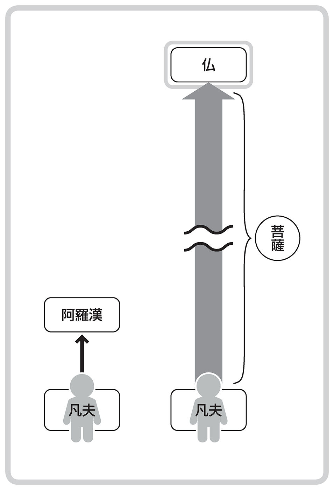
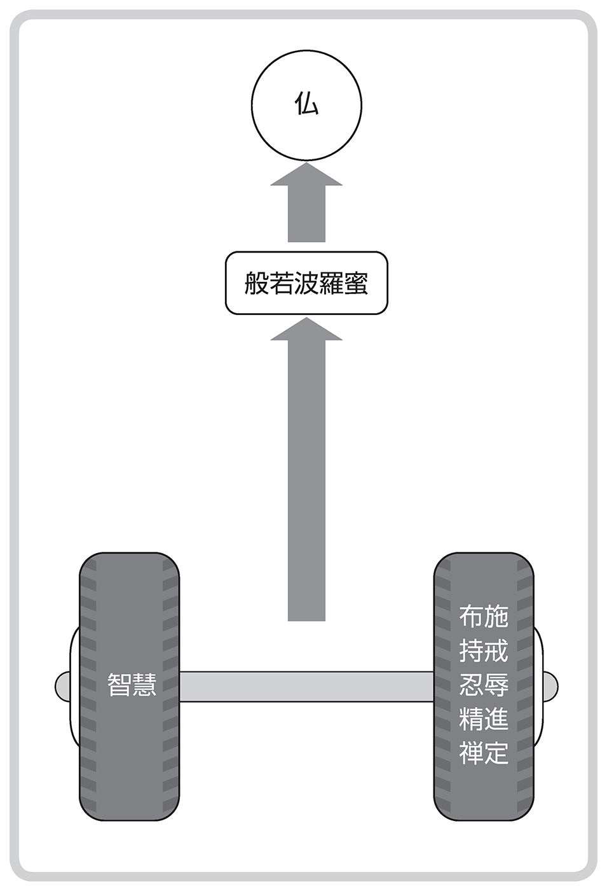
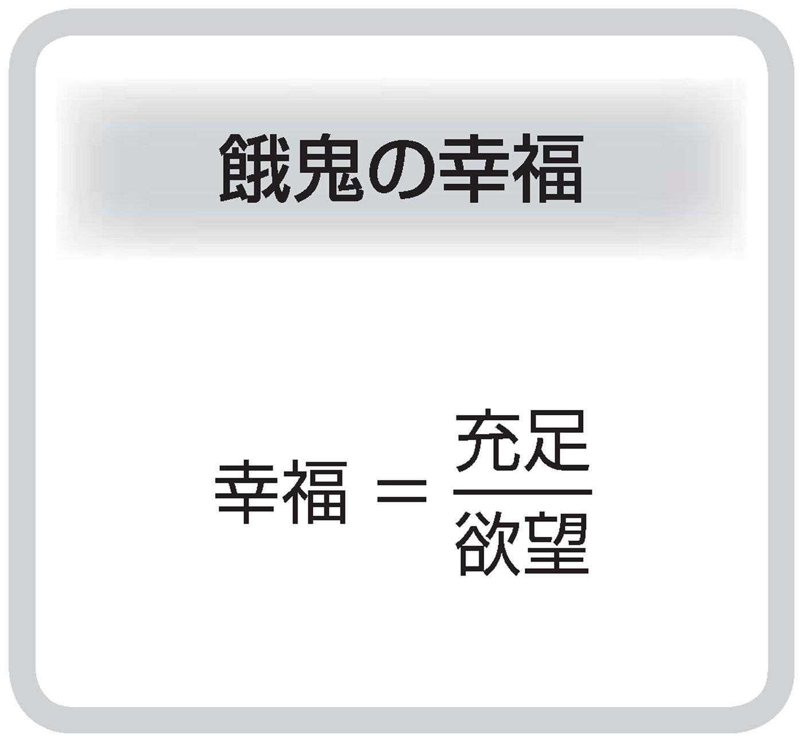
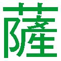
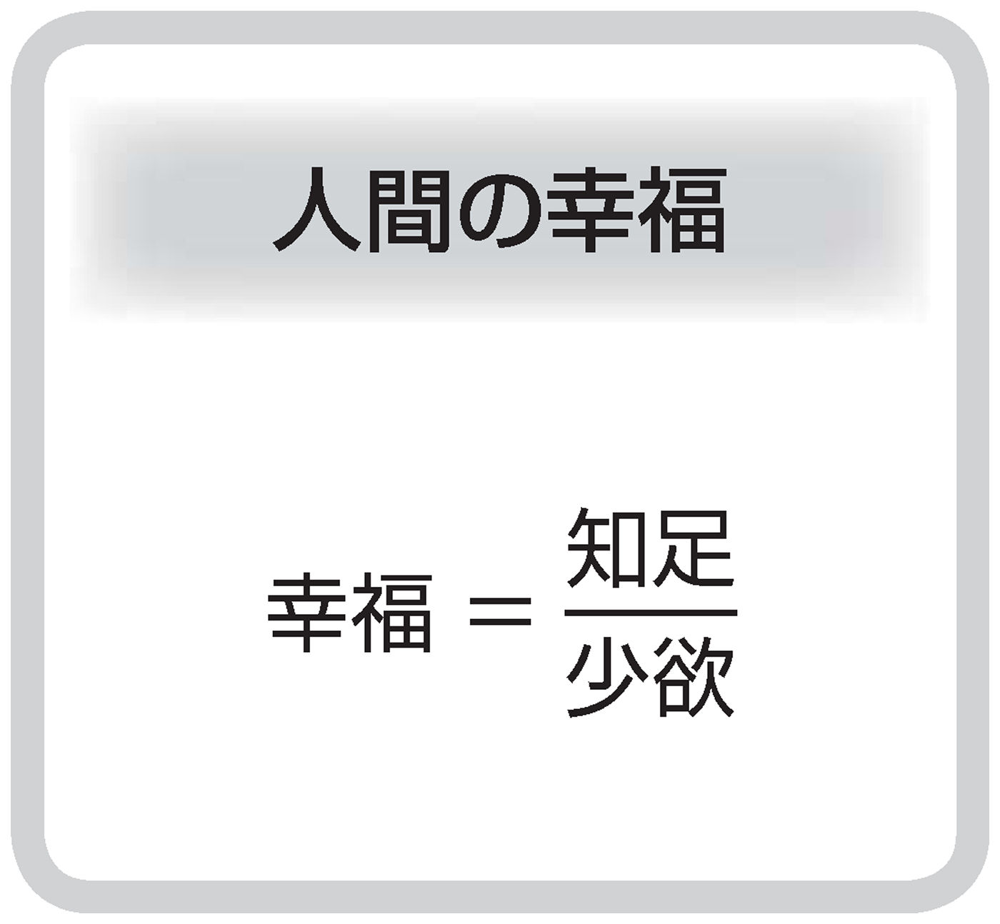
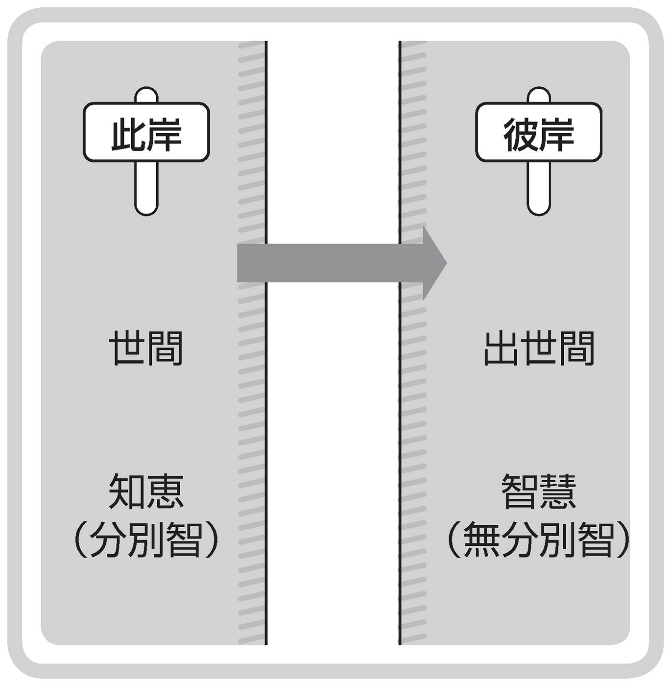

| 「がんばらない」お稽古 | |
| ひろ さちや | |

「がんばらない」お稽古
ひろさちや
昨今の日本は、政治・経済・社会のすべてがおかしくなっています。外交もだめ、教育もだめ、医療もだめ、すべてがだめ、だめ、だめの状態です。さらに国際情勢もよくありません。
「こんな日本で、わたしたちはどう生きればよいのでしょうか？」
そんな質問をよく受けます。
「どうすればよいか？」が、「どうすれば儲かるか？」「どうすれば失敗しないか？」「どうすればインフレになって資産を失わずにすむか？」といった、ハウツー的質問であれば、わたしに答えられるわけがありません。
わたしに言えることは、「あなたがいくらがんばってみたところで、所詮はなるようにしかなりませんよ」です。いわゆる「ケ・セラ・セラ」です。このスペイン語は「なるようになる」といった意味。「あしたはあしたの風が吹く」なんです。
しかし、あなたが、「こんなおかしな現代の日本にあって、わたしたちは人生をどのように生きればよいのでしょうか？」とわたしに訊かれるのであれば、わたしはそれに答えることができます。
わたしからの提案は、
──人間らしく生きましょうよ──
です。そうすると、必ず問われますよね。「人間らしく」というのは、どういう意味か？と。
仏教は、地獄・ 餓 鬼 ・畜生といった世界を考えます。そして、
地獄の世界の住人は......いつも い ら い ら と生きています。
餓鬼は...... が つ が つ と生きています。
畜生の代表は牛馬ですが、彼らは...... あ く せ く と働かされています。
この「いらいら・がつがつ・あくせく」とした生き方をやめて、
──のんびり・ゆったり・ほどほどに──
生きるのが、人間らしい生き方です。
いいですか、戦後七十年近い期間を、日本人はただただ経済成長だけを目指して「いらいら・がつがつ・あくせく」と生きてきました。地獄・餓鬼・畜生の生き方をしてきたのです。それで幸せになったかといえば、ちっとも幸せじゃない。いじめがあり、リストラがあり、原子力発電所の事故があり、医療ミスがあり、その結果、貧富の格差が拡がり貧困率が上昇し、自殺者が増えています。もうそんな生き方をやめて、わたしたちは人間らしく、「のんびり・ゆったり・ほどほど」に生きましょうよ。それがわたしからの提案です。
では、どうすれば、われわれは人間らしく生きられるでしょうか？
それには仏教を学ぶべきです。
でも、仏教といっても、葬式仏教は何の役にも立ちません。あんなものは死者のための仏教です。
また、道徳に傾斜した仏教もだめです。所詮、道徳というものは、強者が弱者をいじめるための道具だからです。
わたしは、社会的な弱者の立場に立って仏教を学んできました。現在のところ、わたしには何の肩書きもありません。だからこそ、社会的に弱者の立場にいる大勢の人のために、わたしは仏教の教えが役立つと思っています。
したがって本書は、弱者がどうすれば人間らしく生きられるかを考察した書です。開き直りさえすれば、弱者は真の意味での強者になれるのですよ。どうかあなたも強者になってください。
二〇一三年二月
ひろさちや
「がんばらない」お稽古 目次
装丁・写真──山平舎 小林正和
──仏教を学びたいのですが、どうすればよいでしょうか......？ やはり出家をしないといけないのですか？
なかなか殊勝な心掛けですね。だが、その質問に答える前に、一つ、こちらから質問します。いったいあなたは、何のために仏教を学びたいのですか？
──何のために......と言われても、ちょっと返答に窮します。笑わないでください、わたしは、たった一度しかない人生だから、その人生を有意義に生きたいと思っています。そのために仏教を学びたいのです。
いや、ますます殊勝な心掛けです。ところで、有意義な人生と言われましたが、それは、どういうものですか......？
──なんだか、最初からいじめにあっているような気がします。有意義な人生を送りたいということは、ちゃらんぽらんな人生を送りたくないということです。生きていて〈ああ、よかった〉と思えるような生き方をしたいのです。立派な人生を送りたいのです。
だとすると、仏教を学ぶ必要はありません。そんな気持ちで仏教を学んでも、仏教は役に立ちませんよ。やめたほうがいいですね。
──どういうことですか？
じつは、多くの人がそこのところを誤解しているのです。仏教を学ぶと人格が高潔になると思っている人が多い。わたしのところにも、ときどき、「仏教を学んで人格を磨く」といったテーマで執筆依頼が来ます。わたしはすぐにお断りします。
「あのね、人格が下劣な人は仏教者にはなれない、とあなたは思っているのではありませんか!? 」
と、編集者に言います。そして、ときには、
「あなたは、〈泥棒は仏教者になれない〉と思っているようだが、それは職業差別ですよ。泥棒も立派な職業（？）なんだから、そして、いかなる職業の人も仏教者になれるのだから、泥棒も立派な仏教者になれるのですよ。品性下劣であって、どこが悪いんです!? 」
と、つい、言わないでもいいことまで言っちゃいます。それで舌禍にあったりするのですが......。
けれども、ここのところは大事ですよ。たとえば、浄土真宗の開祖の 親 鸞 聖 人 （一一七三─一二六二）は、
《善人なをもて往生をとぐ、いはんや悪人をや》（『 歎 異 抄 』）
〔善人が往生できるのだから、悪人が往生できるのはあたりまえなんだ〕
と言っておられる。普通は、「悪人が往生できるのであれば、善人が往生できるのは当然」となりますね。劣等生が大学入試に合格できるのであれば、優等生が合格できるのは当然。それが世間の常識です。だが、親鸞はそれを逆にして、優等生が合格するのだから、劣等生が合格できるのはあたりまえ。そう言われたのです。完全なパラドックス（逆説）のようですが、それが仏教の考え方です。
だから、立派で有意義な人生を送らんがために仏教を勉強するのであれば、およしになったほうがいいですよ。いくら仏教を学んでも、立派で、すばらしく、有意義な人生は送れませんよ。
──じゃあ、何のために仏教を学ぶのですか？
おやおや、「仏教を学びたい」と言われたのはあなたでしょう。そして、わたしが、「あなたは何のために仏教を学ぶのか？」と訊いた。質問が逆ではありませんか!?
まあ、いいでしょう。あなたは、「仏教を学ぶのは何のためか？」と問われた。その質問にわたしが答えるとすれば、仏教は、
──人間が、人間らしく生きるにはどうすればいいか？──
をわたしたちに教えてくれている。したがって、その「人間らしい生き方」を学ぶために、わたしたちは仏教を学ぶのだ、という答えになるでしょう。
──「人間らしい生き方」と言われましたが、それは、立派な人間としての生き方ではないのですか？
そう、そこなんですよ。
「人間らしい生き方」といえば、世間一般では「立派な人間」「高潔なる人間」がイメージされます。だが、仏教はそうではありません。
人間と対比されるものに、仏教では、地獄に生きる生き物や 餓 鬼 、畜生を考えます。そのうちの餓鬼については、『 阿 毘 達 磨 順 正 理 論 』というインドの文献に、
《鬼（＝餓鬼）に三種あり》（巻第三十一）
と書かれています。三種の餓鬼とは、
１ 無財餓鬼、
２ 少財餓鬼、
３ 多財餓鬼、
です。無財餓鬼はまったく財産を持たない餓鬼で、ほんの少しの財産を持っているのが少財餓鬼。この二種の餓鬼は、だから痩せ細っています。絵双紙などで見るおなじみの餓鬼です。
ところが、多財餓鬼というのは、リッチな餓鬼です。財産をいっぱい持ち、山海の珍味を 鱈 腹 食い、だからビヤ樽の肥満体です。上等の服を着て、宮殿のような御殿に住んでいます。しかも、人間世界や天界に住むというのです。
〈どうして、それが餓鬼なの......？〉
そんな餓鬼がいるなんて、最初、わたしには信じられなかった。
しかし、「餓鬼とは何か？」と、その定義を考えてみて、
──餓鬼とは、自分が持っているもので満足できない者である──
としたとき、多財餓鬼の存在が納得できたのです。
無財餓鬼や少財餓鬼は、なるほど自分の所有物がない、あるいは少ないのだから、満足できません。しかし、昔のインドの僧は、 三 衣 一 鉢 といって、 上 衣 ・ 中 衣 ・ 下 衣 の三つの 衣 と、托鉢用の鉢しか持っていなかった。それでも満足していたのだから、人間であって餓鬼ではありません。ところが、現代日本の僧たちは贅沢きわまる生活をしていても、なおかつ〈もっと欲しい〉と思っています。とすると、日本のお坊さんは餓鬼ですよ。それがまさに多財餓鬼です。
お坊さんばかりじゃありません。現代日本の大半の人は、リッチな生活をしています。昔の王侯貴族ができなかったような暮らしです。でも、「景気が悪い」「もっと経済発展・経済成長をしたい」と考えています。「もっと・もっと」と考えているのです。それが多財餓鬼です。
そのような餓鬼になることをやめて人間になりなさい、というのが「人間らしい生き方」です。
──分かりました。では、どうすれば、「人間らしい生き方」ができるのですか？ 仏教は、それをどのように教えているのですか......？
あなたねえ、どうしてそんなに結論を急ぐのですか......!? あなたはいま、「分かりました」と言われましたが、ちっとも分かっていないと思いますよ。一つのことを教われば、それをじっくり考える。考えて、考えて、考えた末に、
〈ああ、なるほどそういうことか！〉
と納得できる。それが、「分かる」ということです。聞いたとたんに「分かりました」というのは、本当に分かったことにはなりません。
わたしはいま、あなたを叱っていますが、じつはわたし自身も昔はそうでした。たとえば、中国唐代の禅僧の 大 珠 慧 海 （生没年不詳）が、「和尚はどのようにして禅の修行をされていますか？」と質問されたとき、
《 飢 え 来 れば 飯 を 喫 し、 困 れ来れば即ち眠る》（『 頓 悟 要 門 』）
と答えています。「腹がへったら め し を食い、眠くなれば眠る。それが禅だ」というわけです。
最初、これを読んだとき、〈眠くなったら眠るというが、サラリーマンが会社で居眠りをすればクビになっちゃう。そんなこと、できるものか！〉と思いました。でも、よく考えてみたら、規則正しい生活をしている人が、昼間に眠くなるわけがありません。われわれが暴飲暴食をし、不規則な生活をしている。そして、昼間はぼおーっとしていて、夜はベッドの上で〈眠れない、眠れない〉と、もがき苦しんでいます。そんな生活をやめなさい、というのが大珠慧海の教えだと気がつきました。そうなって、はじめて納得できるのです。そして、それが「分かる」ということなんです。
さて、「人間らしい生き方」とは、餓鬼の生き方をやめるということです。
年収が五百万円の人が、一千万円を目指してがんばる。それが餓鬼です。五百万円の人が、その五百万円で満足する。そうすると人間です。
したがって、「人間らしい生き方」とは、
──餓鬼になるな！──
ということであり、それは換言すれば、
──がんばるな！──
ということです。あなたが「どうすれば人間らしい生き方ができますか？」と問うのであれば、「がんばるな！」というのが、その答えです。
──ちょっと待ってください。お叱りを覚悟で聞きます。ひろさんが言われるようにすれば、進歩向上がなくなりませんか？
たぶん、そうくるだろうと思っていました。「がんばるな！」ということは、裏を返せば、「あきらめなさい」になりますが、わたしが「がんばるな！」「あきらめよ！」と言えば、必ず、「それじゃあ進歩向上、あるいは発展がなくなってしまう」といった反論が返ってきます。
たとえば、算数のテストで三十点しかとれなかった小学生がいます。この小学生を、
「おまえはだめだ！ もっとがんばらねばならない！」
と全面否定して叱るのが餓鬼の親です。いま、日本人の大半がこの餓鬼の親になっています。
しかし、人間の親であれば、わたしはこう言ってほしいですね。
「学校の成績なんて、あまり問題にしないでいいんだよ。お父さんが小学生のころ、クラスでビリの子が、のちに小さな会社の立派な社長になった者もいたし、クラスで上位の者がホームレスになったケースもある。おまえは、のんびりと、ゆったりと、楽しく勉強すればいいんだよ。楽しい毎日を送ることが大事なんだよ」
そう父親に言われて、のんびり、ゆったり、楽しく勉強を続けて、のちに大学教授になった者もいます。別段、大学教授がいいと言っているのではありませんよ。どの子もどの子も、みんなそれぞれのペースで進歩するのです。進歩のスピードに速い／遅いはありますが、進歩がなくなるわけではありません。
それに、考えてみてください。年収五百万円の人は、いくらがんばったところで、いま現在は年収五百万円でしょう。がんばりにがんばって──餓鬼になって──将来、年収一千万円になる人もいれば、餓鬼になってがんばっても、会社をクビになる人もいます。あるいは会社が倒産して潰れることもある。のんびり・ゆったり人間らしく生きて、年収五百万円が一千万円になる人もいれば、人間らしく生きて会社をリストラされる人もいます。
将来のことは分かりません。餓鬼になれば一千万円が保証されているわけではない。人間らしく生きると年収が必ず減るわけではありません。だとすると、いま現在、わたしが餓鬼になるか、人間になるか、その選択が問われているのです。進歩向上は未来の問題です。その二つをごっちゃにしないでください。
まだ、不満そうですね......。
──なるほど、個人の次元においては、進歩が速いか／遅いかの違いだということは分かりました。目標のレベルに到達するのに、Ａは小学五年生で到達し、Ｂは中学三年生で到達する。それだけの差です。けれども、世の中全体としては、みんなががんばったほうが進歩すると思うのですが......。
あなたが言いたいのは、たぶん、
──競争原理──
だと思います。みんなが競争をして 切 磋 琢 磨 する。そうすることによって世の中全体が進歩発展をする。そのように信じられています。そして、それが資本主義社会の経済発展につながるものとされています。
しかしね、仏教の考え方からすれば、競争原理なるものは、
──地獄の原理──
であって、「人間らしい生き方」ではありません。ちょっと胸に手を当てて考えれば分かることですが、競争原理の支配するところでは、われわれは他人を蹴落とすことばかり考えてしまいます。Ｂ社の売り上げの増大はＡ社の売り上げの減少になる。Ｂ社の売り上げが減少すれば、Ａ社の売り上げが増大する可能性がある。となると、Ａ社はＢ社の発展を阻止したくなります。蹴落とすまではしないでも、他人の失敗を喜ぶ気持ちになります。それは「地獄の原理」であって、「人間の心」ではありません。
おもしろい（？） 小 咄 があります。
山道で二人の男が熊に襲われました。二人は一目散に逃げますが、どう考えても熊のほうが速い。それで一人が言います。
「もうだめだ。熊より速く走れるわけがない」
すると、もう一人が言いました。
「別段、熊より速く走る必要なんてない。ただ、きみより速く走れればいいだけさ」
相手より速く走ることができれば、相手は熊に食われてしまいます。そのあいだに逃げれば、自分は助かるのです。この小咄は 小 田 亮 『利他学』（新潮選書）に出ていました。
これが「競争原理」であり、「地獄の原理」です。
では、「人間らしい生き方」とは何でしょうか......？
それは、二人で一緒に熊に食われようよ、というものです。食われる前に、二人が力を合わせて熊をやっつけようとしてもよい。でも、たぶん熊をやっつけることはできないでしょうから、二人で一緒に熊に食われようよ......というのが「人間らしい生き方」だと思います。
──その場合、「ぼくが犠牲になるから、きみは逃げろ」というのはどうでしょうか？
まあ、それができれば、それでもいいですね。親子だとか、よほど親しい関係の間柄であれば、そういう考えも出てきます。しかし、見ず知らずの人間同士で、そういう考えになれるでしょうか。自己犠牲ができるのは、すごい宗教心ですよ。その意味では、「人間らしい生き方」を超えています。「聖人君子の生き方」だと思います。仏教が教えている「人間らしい生き方」とは、平々凡々とした人間の生き方ですよ。仏教では、われわれを〝 凡 夫 〟 と呼んでいます。凡夫の生き方としては、二人で一緒に熊に食われようよ、というぐらいでいいと思います。いや、それができればお釣りがくるぐらいです。
それから、「きみは逃げろ！ ぼくが犠牲になる」といった考え方でいると、いつのまにか、「きみが犠牲になれ！ ぼくが逃げる」になってしまいます。とくに権力者は、弱い者に向かってそれを強制します。世の中の道徳でいう「自己犠牲の精神」なんてものは危険です。
そもそも道徳なるものは、強者にとって都合のいいものです。「遅刻をしてはいけない」というのは道徳ですが、社員や生徒が遅刻すれば、その道徳の名によって糾弾されます。しかし、強者である社長が遅刻しても、「待たせたね」の一言ですみます。遅刻した生徒は叱られても、先生の遅刻は見逃がされます。あまりにひどい場合でも、有給休暇で処理されます。
だから、道徳なんて信用してはいけませんよ。
あなたは目を白黒させておられますが、仏教が言っているのは、「世間を信用するな！」ということです。
世間はその都度、その都度、世間にとって都合のよいものの考え方をわたしたちに押しつけてきます。わたしが子どものころ、戦前の話ですが、わたしたちは、
「欲しがりません、勝つまでは」
のスローガンを教え込まれました。大東亜戦争に日本が勝つまでは、贅沢をしたいなどと言ってはいけない。「贅沢は敵だ！」と教え込まれたのです。それが戦後の高度経済成長時代になると、
「贅沢は素敵だ」
に変わる。二〇一一年三月十一日以前は、家庭のオール電化が言われて、電力をじゃかすか浪費しろと宣伝されてきた。それが東日本大震災を境に、「節電！ 節電！」と言われるようになりました。世間はころころ変わるのです。
中国に、こんな話があります。
ある男が仕官をしようとした。ときの皇帝は文人を重用するというので、その男は猛烈に勉強します。実力が付いて、どうやら試験に合格しそうになったとき、皇帝は死にます。新しい皇帝は武人を重用する。それで彼は一生懸命、武術を習う。だが、彼の武術が一人前になったころ、またしても皇帝が死んでしまいました。次の皇帝は若者を重用したので、年寄りになった男は結局は仕官が叶いませんでした。
世間というのは、こういうものです。
それなのに、わたしたちは世間に迎合しているのではありませんか。
世間の価値観を信じ込んでいます。
世間の物差しで、ものを考えています。
いえ、それはそれでいいのですよ。わたしはなにも、世間の物差しがまちがっていると言っているのではありません。
ただ、世間の物差し、世間の価値観に合わせて生きていると、あなたは「真に人間らしい生き方」ができない。そう言っているのです。
そりゃあ、そうでしょう。世間の価値観だと、年収五百万円よりは年収一千万円のほうがいいに決まっています。そこであなたは、年収を二倍にするためにせっせと働きます。
あくせく・いらいら・がつがつと働かねばならない。あくせく・いらいら・がつがつと働いて、それで年収が五百万円から一千万円になるとは限りません。が、かりに一千万円になったとします。それであなたは幸福になれるか？ これも、幸福になれるという保証はありませんよ。ひょっとしたら、あなたは女房から離婚を要求されるかもしれません。よく聞くでしょう。退職金を貰って、〈さて、これからは女房と一緒に温泉旅行でもしようか......〉と思っていたら、その退職金を慰謝料に離婚したいと妻から言われた働き蜂のサラリーマンの話を。そういうのが、世間の物差しで生きてきた人間の悲劇です。彼は、
「金を得ることがすべてだ」
といった価値観で生きてきたのです。妻も子どもも、そういうおやじの価値観に呆れ顔でいたのですが、本人は気づいていなかったのです。
この人は「人間らしい生き方」をしていなかったのです。
この人の生き方は、畜生のそれですよ。
ロシアの作家のゴーリキイ（一八六八─一九三六）が『どん底』の中で言っています。
《働きたかったら勝手に働くがいいんだ......働くからってなんで自慢することがある？ もし、働くことで人間の相場がきまるものなら......馬にかなうものあ一人だっていやしねえや......馬は車をひくからな、そして黙ってるからな！》（中村白葉訳、岩波文庫）
世間の価値観は、馬みたいに働き、しかも不平不満・文句を言わない人間を立派な人間としています。ひょっとしたら、そういう人は、一億円の退職金を貰えるかもしれません。しかし、わたしに言わせれば、いや、わたしがどう思うかは関係ありません。わたしが考える仏教の思想からすれば、それは「畜生の生き方」であって、「真に人間らしい生き方」ではないのです。
──ということは、ひろさんは、世間の価値観・世間の物差しを捨てろ！ と言われるのですか？
「捨てろ！」と言われて、われわれが本当に世間の価値観・世間の物差しを捨てられますか!? 人間は、世間の物差しを捨てることはできませんよ。かりにできたとしても、そんなことをすれば、サラリーマンであればすぐに会社をクビになります。
わたしが言いたいのは、
──世間を馬鹿にせよ！──
です。世間の物差しを捨てるのではなく、世間の物差しを馬鹿にするのです。それなら、やろうと思えばできることです。
──しかし、ずいぶん過激な発言ですね。もう少し穏当な表現はできませんか？
〝 馬鹿にする〟 といった表現が、どうして過激なのですか!? 「馬鹿にする」の反対は「尊敬する」でしょう。たいていの人は世間の物差しを尊敬しています。世間の物差しで「立派」と判定された人を尊敬する。それが世間の常識です。でも、世間でいう「立派」な人を尊敬する必要はありません。
たとえば、テレビで大活躍するタレントを、人々は有名人というだけで尊敬します。しかし、彼が暴力団と付き合っていることが分かると、すぐに人々は攻撃します。世間でいう「立派」な人とは、その程度の人物です。
そして、わたしが言っているのは、特定の人物を尊敬したり、馬鹿にしたりすることではありません。その人を尊敬／軽蔑する根拠となる「世間の物差し」を馬鹿にせよ、と言っているのです。彼は金持ちだから偉い、東大卒だから立派だ、と判断する、その「世間の物差し」を信用せず、笑い飛ばすのです。
じつは、このことは、わが国の聖徳太子（五七四─六二二）が言っておられたことでした。
《 世 間 虚 仮 、 唯 仏 是 真 》
世間は虚仮である。〝 虚仮〟 というのは、 嘘 いつわりですね。〝 虚仮にする〟 といった言葉がありますが、これは「馬鹿にする」という意味です。そして、仏だけが真である。聖徳太子は、そう言っておられるのです。
この聖徳太子の言葉は、親鸞の言葉とまったく同じです。親鸞は『歎異抄』の中で次のように言っています。
《 煩 悩 具 足 の凡夫、火宅無常の世界は、よろづのことみなもてそらごとたわごと、まことあることなきに、たゞ念仏のみぞまことにておはします》
〔わたしたちは煩悩にまみれた凡夫であり、この世界は無常の火宅であって、すべてが嘘いつわり、真実は何一つない。そのなかで、ただお念仏だけが真実である〕
ともかく世間は虚仮なんです。嘘いつわりです。そんな世間を信じてはいけません。世間を馬鹿にしないといけない。世間を馬鹿にして、仏教──仏の教え──だけが真実だと思うこと。そこから仏教が始まるのです。
──「世間を馬鹿にせよ！」とひろさんが言われた意味がよく分かりました。これから一生懸命努力して、世間を馬鹿にするようにがんばります。
どうもあなたの言葉に引っかかるなあ......（笑）。あのね、わたしは、世間と喧嘩せよ、と言っているのではありませんからね。その点は誤解しないでください。
それはともかく、簡単にいえば、仏教は「出世間」の教えです。
「出世間」というのは、世間の外に飛び出ることであり、世間を超越することです。世間を馬鹿にするのです。
仏教の開祖の釈 は出家された。出家とはホームレスになることです。
は出家された。出家とはホームレスになることです。
世間の価値観・世間の物差しからすれば、ホームレスは最低の人間です。人間の 屑 になります。
しかし、ホームレスの側から見れば、世間の物差しにしがみついて、権力に 阿 り、金にぺこぺこ頭を下げている人間が馬鹿になります。あくせく・いらいら・がつがつと生きている世間の人が馬鹿に見えるのです。
つまり、釈
は、出家をし、出世間をすることによって、世間を馬鹿にされたのです。釈
が世間を尊敬していたのであれば、出家なんてしませんよ。小なりとはいえ、彼は釈
国の太子だったのですから。
だから、仏教は「出世間」の教えです。
仏教は世間の物差しを馬鹿にします。
それ故、もしもあなたが世間の物差しに従って、世間的な意味での立派な人間になり、有意義な人生を送りたいのであれば、仏教を学ぶ必要はありません。いや、仏教を学ぶことは危険です。
しかし、あなたがそんな世間の物差し・世間の価値観ではなく、
──真に人間らしい生き方とは何か？ また、真に人間らしい生き方をするにはどうすればよいか？──
を学びたいのであれば、ぜひとも仏教を学んでください。わたしは、それを教えてくれるものは仏教だけだと信じています。
──それでは、「人間らしい生き方」を教えてください。仏教は、どうすれば「人間らしい生き方」ができると教えているのですか？
仏教の教えは簡単です。いや、教えが簡単だというのではなく、仏教の教えを理解するのは簡単ですよ。
──どうすればいいのですか？
そもそも「仏教」とは、「仏の教え」です。「仏の教え」なんだから、それを理解するには、あなたが仏になればいいのです。あなたが仏になれば、「仏の教え」は簡単に理解できますよ。
──では、どうすれば、仏になることができるのですか......？
ところがね、その「仏になる」のは簡単ではありません。相当の修行を積まないと仏にはなれません。相当の修行といっても、十年や二十年ではだめです。百年でもだめ。まあ、最低でも五十六億七千万年ぐらいの期間を修行せねばなりません。
生まれ変わり、死に変わりして、 輪 廻 転 生 しながら五十六億七千万年の修行を積み重ねて、ようやくわれわれは仏になれるのです。
だから、まあ、はっきり言えば、われわれは仏になれないのです。
──.........。
おやっ、怒りましたね。あなたは 脹 れっ面をしておられますが、わたしはあなたを怒らせようとして言ったのではありません。これはまじめな話です。
仏教は「仏の教え」です。と同時に、仏教は「仏になるための教え」です。わたしたちが「仏の教え」を学んで、そしてわたしたち自身が「仏になる」、そのための教えです。したがって、たんに「仏の教え」を暗記しただけでは、仏教を学んだことにはなりません。われわれ自身が「仏になる」ことがないと、仏教を学んだことにはなりません。
ところが、いま言ったように、われわれが仏になるには 厖 大 な時間がかかります。本当は三大 阿 僧 祇 劫 といって、何兆を何兆倍もしたほどの時間がかかるとされていますが、それを短縮して五十六億七千万年にしておきます。ということは、われわれが仏になることはほとんど不可能です。
では、どうすればよいのでしょうか？
そのための一つのやり方は、仏になることを諦めて目標を下げればよいのです。仏よりもずっとずっと低い段階を目標にします。その目標が、
── 阿 羅 漢 ──
です。阿羅漢というのは、ちょっとした悟りを開いた聖者だと思ってください。
そして、その阿羅漢を目指して修行するのが小乗仏教です。
この阿羅漢になるには、それほどの時間がかかりません。能力・素質のある者だと、二、三日で阿羅漢になれたといった記事もあります。まあ、普通の人間で、十年、二十年も修行すれば阿羅漢になれるでしょう。ただし、阿羅漢になるには出家しないといけません。出家といっても、現在の日本のお坊さんのように、妻帯していてはいけませんよ。出家するということは、文字通りの意味でのホームレスになることです。
ともかく小乗仏教は、仏になることを諦めて、じっと程度の低い阿羅漢になることを目指した仏教です。
しかし、そんなふうに目標を下げるのはおかしい。やはりわれわれは仏を目標にすべきではないか。といった意見がのちに出てきました。そして、仏を目標にした新しい仏教運動が展開されたのです。それが大乗仏教です。
この大乗仏教の興起は、釈
入滅後五百年のころ、紀元前一世紀から紀元後一世紀のころとされています。
──でも、われわれは仏にはなれないのでしょう。少なくともこの一生のあいだに、仏になることはない。それなのに、どうして仏を目指すのですか？
仏になれなくても、仏を目指すことはできますよ。
じつは、ここのところが重要です。大乗仏教では、仏を目指して歩む者を、
──
菩
 ──
──
と呼びます。菩
において大事なのは、歩む姿勢です。それともう一つは、〈自分は仏に向かって歩んでいるのだ〉といった自覚です。
この場合、自分はどこまで仏に近づくことができたか、といった到達度は問題ではありません。なにせ、われわれ凡夫と仏とのあいだには無限大といってよいほどの距離があります。無限大に対しては、五十歩、百歩の距離の差は問題ではありません。一万歩、百万歩も問題になりません。
だから、他人と比較する必要はないのです。その歩みが速いか／遅いかは、まったく関係のないことです。ただ歩んでいればよいのです。
それに対して阿羅漢というのは、百点満点をとった優等生です。百点を基準にすれば、Ａが六十五点、Ｂが九十五点であれば、やはりＢのほうが偉いとなります。しかし、菩
は仏という無限大を基準にしますから、九十五点、六十五点の差はまったく無視されるのです。それを図示したのが次の図です。

それから、菩
のうちには、もうほとんど仏の境地にまで歩んでおられる方もおられます。観音さま（観世音菩
、観音菩
）やお地蔵さん（地蔵菩
）がそうです。あるいは
文
殊
菩
、
普
賢
菩
、
弥
勒
菩
もそうです。
この弥勒菩
は未来仏であって、釈
の入滅から五十六億七千万年後に弥勒仏となってこの世に出現されると言い伝えられています。現在は弥勒菩
として、
兜
率
天という天界でスタンバイ（待機）しておられるというのです。わたしが先ほど、五十六億七千万年後と言ったのは、この数字です。
このように、仏の境地に近い所まで歩んでおられる菩
もいれば、仏と同等の実力を持った菩
も大勢おいでになります。しかし、わたしたちは、ほんの一歩か二歩を歩み始めたばかりの菩
です。だが、それでも、菩
であることに違いはありません。
〈われわれだって菩
なんだ〉
そういう自覚をもって仏に向かって歩んで行くのが大乗仏教の精神です。すなわち、大乗仏教は「菩
の仏教」です。
──余計なこととお叱りを受けそうですが、〝 小乗仏教〟 という呼び名は差別語だから使うな、と言う学者がいますが......。
本当に余計なことです。〝 小乗仏教〟 が差別語であれば、〝 小学校〟 は差別語ですか!?
いま言ったように、大乗仏教と小乗仏教とでは、目指しているレベルが違います。大乗仏教は仏を目指し、小乗仏教は阿羅漢を目指します。レベルが違うのだから、低いレベルの教えを〝 小乗〟 と呼んで、どうしていけないのですか!? わたしは、最近、〝 小乗仏教〟 という呼称をやめて、それを〝 阿羅漢教〟 と呼んでいます。そして、阿羅漢教は仏教ではない──と主張しています。
でも、そんなことはどうだっていいのです。わたしたちは、われわれは大乗仏教を信じているのだ、ということだけをはっきり自覚していればそれでいいのです。
さて、大乗仏教は「菩
の仏教」です。わたしたちは菩
なんだ。菩
というのは、仏に向かって歩む人である。菩
の自覚をもって、たえず仏に向かって歩んで行こう。それがわれわれ大乗仏教徒の基本姿勢です。
そして、その仏に向かって歩む「歩み方」をわれわれに教えてくれているのが、
── 六 波 羅 蜜 ──
です。これは、大乗仏教の菩
に課せられた六つの実践徳目です。
１ 布 施 波羅蜜。
２ 持 戒 波羅蜜。
３ 忍 辱 波羅蜜。
４ 精 進 波羅蜜。
５ 禅 定 波羅蜜。
６ 智 慧 波羅蜜。
この六つの波羅蜜を実践するのが「菩
の生き方」であり、それがとりもなおさず「人間らしい生き方」です。
この一つ一つについては、次章以降で詳しく解説しますが、ここではまず、
──波羅蜜──
といった言葉の意味を考えてみましょう。
この語は、サンスクリット語の〝 パーラミター〟 を音訳したものです。したがって、正しくは〝 波羅蜜多〟 になりますが、最後の〝 多〟 の字は省略されて、〝 波羅蜜〟 として使われるのが普通です。
さて、サンスクリット語の〝 パーラミター〟 は「完成」といった意味です。したがって、六波羅蜜とは、布施・持戒・忍辱・精進・禅定・智慧の六つの徳目を実践し、それらを完成させることです。
ところが、この〝 パーラミター〟 といった語は、解釈の仕方によっては、
──パーラム（ 彼 岸 ）＋イ（渡る）＋ター（抽象名詞をつくる接尾語）──
となり、「彼岸に渡ること」「到彼岸」といった意味になります。『 般 若 心 経 』を訳した 玄 奘 （六〇二─六六四）は、この語をそのように理解しました。
彼岸に渡るというのは、われわれが住んでいる煩悩の世界を脱出して、悟りの彼岸、悟りの世界に渡るということです。したがってそれは「出世間」です。
ところで、『般若心経』ですが、あれは正しくは、
──『般若波羅蜜多心経』──
であることはご存じですね。〝 般若〟 という語はサンスクリット語で「 智 慧 」を意味する〝 プラジュニャー〟 （実際はその俗語形の〝 パンニャー〟 ）を音訳したものです。そして〝 波羅蜜多〟 は「完成」もしくは「到彼岸」です。だから『般若心経』は、「智慧を完成させる根本原理（心）を教えた経典」、あるいは、「智慧でもってこの煩悩の世間から脱出する根本原理を教えた経典」、といった意味になります。
──いま、「般若」と「智慧」は同じものだと言われましたが、それなら六波羅蜜の六番目をなぜ「智慧波羅蜜」と言って「般若波羅蜜」と言わないのですか？ あるいは、『般若心経』はなぜ『智慧心経』と言わないのですか？
なかなかいい質問です。わたしは、「般若」と「智慧」の違いをどこで解説しようかと迷っていましたが、いま、あなたが質問されたので、ここで解説することにします。
さて、仏教では、「ちえ」と呼ばれるものを二つに分けて考えます。発音すれば同じになりますが、その二つを、
──〝 智慧〟 と〝 知恵〟 ──
と表記することにします。この二つがどう違うかといえば、
知恵は......世間の知恵、
智慧は......出世間の知恵、
だと思ってください。また、仏教では、
世間の知恵を...... 分 別 智 と呼び、
出世間の智慧を...... 無 分 別 智 と呼んでいます。
この二つはまったく違ったものです。それをごっちゃにすると、仏教の教えが分からなくなります。
われわれの日常生活においては、「分別」というものはいいものです。あの人は分別のある人だと言えば、物事の道理がよく分かった人を意味し、褒め言葉です。
ところが、仏教においては、分別はよくないのです。なぜかといえば、仏教の教えからすれば、何も区別する必要のないものをわざわざ区別して、一方を愛着し、他方を嫌悪するのが分別だからです。
たとえば、ある水族館では、飼育している魚の餌に金魚を与えていました。すると来館者は文句を言います。「かわいい金魚が食べられるのは残酷だ！」「子どもの教育上よくない」というのです。それで餌をドジョウに替えました。すると誰も文句を言いません。金魚が食べられるのは残酷だ。ドジョウは食べられて当然。それが分別智です。
人間はみんな仏の子です。われわれがみんな「 仏 子 」だというのは、『 法 華 経 』が言っています。その仏子を、われわれは分別智でもって、「いい子／悪い子／普通の子」と差別し、悪い子をいじめています。
世間の知恵というものは、所詮はこのような分別智です。
それに対して仏教が教える智慧──六波羅蜜の一つである智慧波羅蜜──は無分別智です。わざわざ区別する必要のないものを区別しないで、こだわりなく、あるがままに受け容れることのできる智慧が無分別智です。
分別智は優等生／劣等生を区別しますが、そんな区別をせずに人間のあるがままを愛することのできる智慧が無分別智です。同じように、冬の寒さ／夏の暑さをそのまま受け容れるのが無分別智です。暑さ／寒さなどは、われわれの思うがままにならないことです。その思うがままにならないものを、なんとかして思うがままにしようとするのが分別智の働きです。思うがままにならないものを、思うがままにならないものとして、そのままに受け容れるのが無分別智の働きであり、それが智慧波羅蜜です。
──宮沢賢治（一八九六─一九三三）の詩に、
雨ニモマケズ
風ニモマケズ
雪ニモ夏ノ暑サニモマケヌ
とあります。無分別智というのは、この詩のようなものですか？
仏教学者のうちには、やけに宮沢賢治を持ち上げる人がいます。しかし、わたしは、宮沢賢治はあまり大乗仏教の精神が分かっていなかったと思います。「雨ニモマケズ......」の詩のうちには、《慾ハナク／決シテ 瞋 ラズ／イツモシヅカニワラッテヰル》とありますが、そんな人間がいれば化け物ではないでしょうか。《雨ニモマケズ／風ニモマケズ》といった精神鍛錬めいたものは、小乗仏教の 阿 羅 漢 ならそうかもしれませんが、大乗仏教ではそんなことは考えません。賢治はどこかで仏教を勘違いしているように思います。
わたしは賢治よりも堀口大学（一八九二─一九八一）の詩のほうが好きです。堀口大学はフランスのシュールレアリスムの詩を日本に紹介して、昭和の新文学に大きな影響を及ぼした詩人です。彼は「自らに」と題する次のような四行詩をつくっています。
《雨の日は雨を愛さう。
風の日は風を好まう。
晴れた日は散歩をしよう。
貧しくば心に富まう》
これが無分別智であり、智慧波羅蜜だと思います。
では、「智慧」と「般若」はどう違うのでしょうか。
「智慧」も「般若」も同じもので、言葉の上では違いはありません。けれども、われわれは、これを、
「智慧」は......菩
の「智慧」、
「般若」は......仏の「智慧」、
と使い分けることにします。もちろん、両者はともに「無分別智」です。
前に述べたように、〝
波羅蜜〟
といった言葉は「完成」を意味します。わたしたちは仏を目指して歩む菩
であり、菩
であるためには世間でいう知恵ではなしに、菩
らしい智慧を持たねばなりません。その智慧（菩
の智慧）を磨き、完成させねばならないのです。それが「智慧波羅蜜」です。
そして、智慧が完成するならば、それは仏の智慧になり、「般若」になります。
でもね、そう簡単に完成はありませんよ。わたしたちが簡単に仏の智慧である般若を持てるわけがありません。
ですが、わたしたちはそれでも菩
の智慧を磨いて、それを般若にしていくのです。そういう実践が菩
の実践になります。
──では、どのようにすれば、智慧を磨いて完成させ、般若にすることができますか？ 具体的な方法を教えてください。
言っておきますが、智慧波羅蜜といっても、本当に完成させることはできませんよ。菩
というのは仏に向かって歩み続ける人であり、智慧波羅蜜も完成に向かって歩み続ける、磨き続けるだけです。
それから、智慧波羅蜜は智慧波羅蜜だけで、単独で実践するものではありません。六波羅蜜は、六つがまとまって一つになっていると思ってください。わたしたちは、布施波羅蜜や忍辱波羅蜜、精進波羅蜜などを総合的に実践することによって智慧が磨かれ、逆に智慧波羅蜜の実践によって布施や持戒、忍辱、精進、禅定ができるのです。
たとえば、精進というのは努力のことですが、ただ努力をすればいいというのではありません。二十世紀後半以後の日本人は、経済発展のために努力に努力を重ねてきましたが、その結果、環境は破壊され、弱者にとって生きにくい日本になってしまいました。もう少し努力もほどほどにしておいたほうがよかったと思いますが、では、どれぐらいがほどほどか、それを教えてくれるものが智慧です。その智慧があって精進ができ、精進によって智慧が磨かれます。
忍辱だって同じです。忍辱とは耐え忍ぶことですが、理不尽な扱いをされて、相手の報復が怖いからといって黙って引っ込んでいるのが忍辱でしょうか？ 日本には「長い物には巻かれよ」といったことわざがありますが、わたしはそれは忍辱波羅蜜ではないと思います。怒るべきときには怒るべきです。では、どういう場合が怒るべきときか、それを教えてくれるのが智慧です。けれども、ちょっとしたことで腹を立てて、〈いや、怒ったっていいのだ！ 腹を立ててなぜ悪い!?
〉と開き直ってしまっては、菩
の実践にはなりません。やはり忍辱波羅蜜を行ずることが大事です。
ともかく、このように六波羅蜜は全体として一つになっています。しかし、そのうちでも、とりわけ智慧波羅蜜は大事です。わたしは、智慧波羅蜜が六波羅蜜という車の一輪になっていて、もう一輪が残りの五波羅蜜だと思います（次図参照）。そしてこの両輪でもって六波羅蜜という車が前に進んで行きます。

その向こうにあるのが「般若波羅蜜」であり、さらに向こうに「仏」がある。そういう構造になっていると思います。
──六波羅蜜の最初は「布施波羅蜜」ですね......。
そうです。六波羅蜜といえば、普通は「布施波羅蜜」から解説することになっています。けれども、いま申し上げたように、六波羅蜜のうちで「智慧波羅蜜」が車の両輪のうちの一輪になるほど重要です。この智慧がないと、あとの五つの実践ができないぐらいです。ですから、わたしは最初に、「智慧波羅蜜」を解説したいと思います。
さて、〝 波羅蜜〟 といった言葉は、すでに述べたように「完成」という意味であると同時に、「彼岸に渡る」の意味があります。ですから、「智慧波羅蜜」は「彼岸に渡った智慧」あるいは「彼岸に渡るための智慧」です。つまり、わたしたちが住んでいる世間の知恵ではありません。そのことをもう一度、しっかりと確認しておきます。
世間の知恵は、すべて欲望を充足させようとするものです。
そして、世間の人々は欲望が充足されると幸福になれると思っています。
馬鹿ですねえ、欲望が充足されると、欲望が膨らみます。それゆえ、欲望を充足させることは、自分をますます不幸にさせていることになるのです。ですが、世間の人はそれに気づいていません。
たとえば、年収が一千万円欲しいという欲望があるとします。しかし、その人の収入が現在のところ五百万円であれば、二分の一の幸福になります。年収八百万円になれば八割の幸福。そして、年収が一千万円になると一〇〇パーセントの幸福。そのように考えています。けれども、年収が一千万円になれば、それで〈よかった〉と思う人はほとんどいません。
〈いや、昔は年収一千万円が夢だった。だが、昔と今では貨幣価値が違う。だから、今日だと、三千万円の年収がないと、幸福とは言えない〉
となるのです。そうすると、幸福度は三分の一になってしまいます。
これは、プロローグで述べた「 餓 鬼 」の考え方ですね。ですから、欲望を充足することによって幸福になれるという考え方を、
──餓鬼の幸福──
と呼ぶことにします。つまり、「餓鬼の幸福」とは、次の公式になります。

世間の人は、このような公式にもとづいて、一生懸命、欲望を充足させるための知恵を磨いているのです。そうして、欲望を充足させればさせるほど、ますます不幸になっています。そして、「人間」であることをやめて「餓鬼」になっているのです。
人間が仏に向かって歩むのが
菩
です。そして、菩
の智慧は「智慧」です。でも、世間の人は餓鬼に向かって歩み、そのために知恵を磨いています。だから、一休禅師（一三九四─一四八一）は左のような道歌を詠んでいます。
《生まれ子がしだいしだいに智恵つきて仏にとおくなるぞ悲しき》
一休禅師は〝 智恵〟 と表記していますが、これはわれわれの表記だと〝 知恵〟 ですね。
──ということは、わたしたちは「餓鬼の幸福」を求めてはいけない。「菩 の幸福」を求めよ！ ということですか？
じつは、わたしも昔はそのように考えていました。「餓鬼の幸福」に対して「人間の幸福」（あなたが言った「菩
の幸福」を、かつてのわたしは「人間の幸福」と呼んでいました）を対比して、その公式を次のように説きました。

つまり、仏教が教える幸福は、「少欲」（あなたの欲望を少なくしなさい）と「知足」（ 足 るを知る心を持ちなさい）だと説明していたのです。
でも、最近になってわたしは、このような考え方のまちがいに気がつきました。というのは、いかなるかたちであれ、われわれが「幸福」を求めるそのことが欲望であることに気がついたのです。
もちろん、仏教の教えである、
──少欲知足──
はまちがいではありません。けれども、「少欲知足」が何をもたらすかといえば、何ももたらしはしないのです。「少欲知足」によって幸福が得られるわけではありません。何かのために「少欲知足」をするのではなしに、「少欲知足」そのものが大事なのです。
──ちょっとよく分からないのですが......。それじゃあ、何のために「少欲知足」をするのですか？
本書の最初に言いましたね、われわれは「人間らしい生き方」を学ぶために仏教を学ぶのだ、と。じつは「少欲知足」は、その「人間らしい生き方」なんです。
わたしがよくお話しするインドの民話があります。
九十九頭の牛を持っている金持ちがいました。彼は、あと一頭の牛を手に入れるときりのいい百頭になると考えて、 幼 馴 染 の家を訪ねて行きます。わざとおんぼろの服を着て、貧乏人になりすまして行ったのです。
幼馴染は一頭の牛を持って、細々と暮らしていました。
「おまえはいいなあ......。ちゃんと牛を持ってやっている。ぼくは貧乏になって、子どもに何も食べさせることができなくなった。昔のよしみで助けてくれ」
彼は幼馴染に泣きつきました。もちろん嘘ですよ。彼は友人を騙しにかかったのです。
すると幼馴染が言いました。
「ぼくは、きみがそんなに困っているとは知らなかった。友人として恥ずかしい。ぼくであれば、この一頭の牛がなくても、女房と力を合わせて働けばなんとかなる。だから、この牛をきみに布施する。どうかこの牛を連れて帰って、お子さんにミルクでも飲ませてあげてほしい」
「ありがとう。ありがとう。これで助かったよ。やはり持つべきものは友人だよ。ありがとう」
そう言って、金持ちは牛一頭を引いて帰って行きます。
〈これできりのいい百頭になった〉
金持ちは大満足です。一方の貧乏人も、
〈友人を助けることができてよかった〉
と満足です。
では、この二人、いったいどちらが幸福ですか？
──それは「幸福」の定義によります。物質的な意味での幸福であれば、金持ちのほうが幸福です。だが、心の豊かさという意味では、貧乏人のほうが幸福です。
そうですよね、わたしも昔はそう思っていました。
しかし、心の豊かさだけで幸福が得られるでしょうか......？ 貧乏人の生活はつらいものですよ。ひょっとしたら、彼は友人に牛を布施したことを後悔するかもしれません。
ところで、ここで確実に言えることが一つあります。
それは、金持ちの喜び（幸福）はたった一晩だけのものだ、ということです。
〈ああ、よかった！ 牛がきりのいい百頭になった〉
と、金持ちはその晩、喜んで寝ます。だが、翌朝、目が醒めると、彼は、
〈さあ、次は、目標百五十頭でがんばるぞ！〉
と考えます。すると彼の所有する百頭の牛が、たちまち「マイナス五十頭」になります。マイナス五十頭はゼロよりも少ないのです。そして金持ちは、そのマイナス五十頭をマイナス四十頭にし、マイナス三十頭にし、マイナス二十頭にするために、
──あくせく・いらいら・がつがつ──
と働かねばなりません。つまり、がんばらねばならないのです。
それはまさに「餓鬼の生活」です。
そして、その「餓鬼の生活」を送ることが「餓鬼の幸福」です。
いま、現代の日本人が考えている「幸福」とは、あくせく・いらいら・がつがつと働くことです。つまり日本人は、忙しいことが幸福だと思っています。馬鹿ですねえ。
わたしは、そんな幸福は求めないほうがよいと思います。
──「餓鬼の幸福」ではなしに、「真の幸福」を求めるべきだと言われるのですね。
いいえ、そうではありません。「真の幸福」といっても、それを求めること自体が欲望なのですから、求めたとたんにそれは「餓鬼の幸福」になってしまいます。だから、「幸福」を求めること、そのことをやめるのです。
──まさか「不幸」を求めるのではありませんよね......？
あたりまえです。どこのどの人が「不幸」を求めるでしょうか!? 馬鹿なことを言わないでください。
「餓鬼の幸福」を求めた金持ちは、あくせく・いらいら・がつがつと生きねばならなくなりました。それが「がんばり」の生き方です。では、その反対は何でしょうか？
──のんびり・ゆったり・ほどほど──
の生き方です。そのような生き方を「あきらめ」の生き方と名づけましょう。〝 あきらめ〟 という言葉については、あとで解説します。
「がんばり」の生き方......あくせく・いらいら・がつがつと生きる。
「あきらめ」の生き方......のんびり・ゆったり・ほどほどに生きる。
どちらが人間らしい生き方かといえば、のんびり・ゆったり・ほどほどに生きる「あきらめ」の生き方のほうだということに、おそらく誰も異存はないと思います。そして、この「あきらめ」の生き方は、たぶん金持ちにはできません。絶対にできないわけではないでしょうが、金持ちは「餓鬼の幸福」を求めてしまいますから、「がんばり」の生き方しかできないのです。そして、現代日本人は九九・九パーセントまでが「餓鬼の幸福」を求め、「がんばり」の生き方をしています。それは、現代日本人が豊かになりすぎたからです。
「あきらめ」の生き方ができるのは、貧乏人のほうです。
現代日本人と対比して、昔の日本人はこの「あきらめ」の生き方をしていました。昔の日本人は貧しかったからです。たとえば江戸っ子について、 杉 浦 日 向 子 （一九五八～二〇〇五）は次のように報告しています。
《......確かに江戸は貧しい半開の地だ。喰うや喰わずの人口がその大半を占めている。
これらの貧しさは、単に社会構造の未熟さから来るものだけではなく、彼ら自身の選択でもあるのだから不思議だ。とにかく働かないのだ。ようよう食べるだけ 稼 いでしまうと仕舞にしてしまう。喰うや喰わずも当り前である。正味四時間も働けば良いほうだ。
.........。
ニコニコと貧乏をしている。江戸は、まるで趣味で貧乏をしているようなところだ》（『江戸アルキ帖』新潮文庫）
けれども、錯覚しないでください。わたしは、貧乏人は必ず「あきらめ」の生き方──のんびり・ゆったり・ほどほどの生き方──ができる、と言っているのではありません。江戸の貧しい庶民たちには、それができた。なぜなら、江戸時代はほとんどの人が貧しかったからです。しかし、物質的に豊かになった現代日本人が「あきらめ」の生き方をするのは、まずは不可能といってもよいくらいです。
それでも、やはりわれわれは「あきらめ」の生き方をしたい。餓鬼の生き方、「がんばり」の生き方はしたくありません。
では、どうすれば「あきらめ」の生き方ができるでしょうか......？
その「あきらめ」の生き方こそが、真に人間らしい生き方です。そして、その人間らしい生き方を仏教は教えてくれています。
それは菩
としての生き方であり、具体的には六波羅蜜です。
六波羅蜜のうちでも、とりわけ大事なのは智慧波羅蜜です。
この智慧がないと、われわれはあきらめることができないのです。
じつは〝 あきらめ〟 といった言葉を、多くの日本人は誤解しています。それは「断念すること」だと思っています。たしかに〝 あきらめ〟 には「断念する」といった意味がありますが、それはごく一部の意味です。そのことは辞書を見れば分かります。
《あきらめ〔明らめ〕......①（心の）曇りを無くさせる。......②明瞭にこまかい所までよく見る。......③（理にしたがって）はっきり認識する。判別する。......④事の筋、事情を明瞭に知らせる。弁明する。......⑤片をつける。処理する。......⑥〔諦め〕断念する。......》（『岩波古語辞典』）
つまり〝 あきらめ〟 という語は「明らかにする」が基本的な意味であり、〝 明らめ〟 と表記されています。一方、「断念する」のほうは〝 諦め〟 と表記されています。わたしたちも、以下ではこの表記の区別を採用することにしましょう。
そうすると、われわれが「明らめ」の生き方──ゆったり・のんびり・ほどほどの生き方──をするには、仏教が教える真理をしっかりと明らめておかねばなりません。つまり智慧が必要なのです。
そしてその智慧は、世間の知恵ではありません。世間の知恵だと、われわれは「がんばる」生き方をすることになり、餓鬼になってしまいます。
ということは、仏教の智慧は、世間の生き方を馬鹿にすることです。
一頭の牛を友人に布施した男の例で考えてみましょう。彼は、世間の人々が考える「幸福」を馬鹿にした。世間の人々が考える「幸福」を大事にしていると、たった一頭しか持たない牛を布施することはできません。彼は「餓鬼の幸福」を馬鹿にしたからこそ、一頭の牛を布施し、そして心の平安を得たのです。ゆったり・のんびり・ほどほどに生きることができました。
ともかくも、われわれは世間を馬鹿にせねばならないのです。それが仏教者となるためのまず第一条件になります。
──ひろさんの言われることが少し分かった気がします。ひろさんは、世間の人が言っている「幸福」なんてものは、すべてがすべて「餓鬼の幸福」であって、だから真に人間らしい生き方をしようとする仏教者は「幸福」を求めてはならない、と言いたいのですね。
ありがとう。なかなかいいところに気づいてくださった。そう、その通りですよ。
幸福を得ようとしても、なかなか手に入りませんよ。九十九頭の牛が百頭になれば幸福だと思っている。最初はそう思っていても、百頭になれば百五十頭にしたくなる。百五十頭になれば二百頭にしたくなる。だから、幸福はどんどん逃げて行きます。
課長になれば部長、部長になれば局長、局長の次は社長となります。そして、社長になって、部下の不祥事で引責辞職をするはめになる。〈社長になんかなるのではなかった〉と後悔することもあります。
一流大学に現役で合格することが幸福でしょうか？ 現役で合格したがために、実力不足で大学の授業についていけず、中途退学する学生もいます。それよりは一年浪人して合格したほうがよかったかもしれません。
また、現役で合格したのだけれども、クラスの中に相性の悪い者がいて、その人にいじめられて自殺した青年もいます。一年浪人したのちに合格すれば、彼はすばらしい恋人にめぐり逢ったかもしれません。何が幸福で、何が不幸か、そう簡単には分からないのです。
そういえば、中国に、
── 人 間 万事 塞 翁 が馬──
といった故事がありましたね。『 淮 南 子 』という書物に出てくる寓話に由来する言葉です。
国境の要 塞 の近くに住む 翁 （それで塞翁といいます）の馬が逃げ出して胡の国に行ってしまいました。近所の人が「不幸ですね」となぐさめると、塞翁は、
「いや、これが 福 にならないとも限らない」
と言います。数か月後、その馬が胡の駿馬を引き連れて帰って来ます。近所の人がお祝いに行くと、
「いや、これが 禍 いにならないとは限らないよ」
と言うのです。案の定、彼の息子がその駿馬を乗り回しているとき、馬から落ちて大腿骨骨折をします。近所の人がなぐさめると、塞翁は、
「いや、これが福にならないとは限らない」
と言った。それから一年後、胡人が大挙して攻め込んで来たとき、若者たちは戦争に駆り出され、十人中九人までが戦死しました。ところが、その息子は脚が悪かったために戦いに駆り出されず、親子ともに無事であったのです。
そういう話です。
──ということは、現在の幸福は未来の不幸、現在の不幸は未来の幸福、つまり「苦は 楽 の 種 、楽は苦の種」といった意味になりますか？
さあ、どうでしょうか......。昔、 陳 舜 臣 さんに教わったのですが、日本人は「苦は楽の種、楽は苦の種」と吉凶禍福の転変を時間的に見ていますが、中国人は苦の中に楽を、楽の中に苦を見ているようです。だから塞翁も、悲しみの中に喜びを、喜びの中に悲しみを見ていたのではないでしょうか......。
──なるほど、そう言われると納得できるところがあります。金持ちになると高額の税金を払わねばなりませんからね。
あなたのその例は、ちょっと不適切ですよ。
たしかに、いいことのうちには悪い面があります。長寿であることはめでたいことですが、長寿の老人を世話する人の側に立てば、いろいろと苦労があります。とくに認知症の老人の世話は大変です。したがって、たとえば「長寿」ということのうちに、プラスの面とマイナスの面があります。
けれども、それは、本人の問題と世話する人の問題なのです。それゆえ、本人にすればやはり長寿をいいことと考えて、長寿を望みます。また、たいていの人は、税金を多く払ってもいいから金持ちになりたいと思うでしょう。税金を払うのがいやだから、俺は貧乏人でいる──なんて言う人がいれば、それは痩せ我慢です。
わたしが「人間万事塞翁が馬」といった中国の故事を引用したもので、ちょっと誤解を与えたかもしれません。わたしが言いたいのは仏教の考え方です。中国の故事そのものは、やはり世間の知恵であって、仏教の教えではありません。
世間の人は「幸福」と「不幸」をはっきり区別して考えています。そして、日本人は、現在の幸福が未来の不幸になることもあり、逆に現在の不幸が未来の幸福に転変することもあると考えています。それに対して中国人は、幸福の中に不幸があり、不幸の中に幸福があると考えています。そうした差はありますが、日本人も中国人も、「幸福」と「不幸」といったものがあると信じています。そのうえで、できれば幸福になりたいと考えているのです。
いずれにしても、それは「 分 別 智 」ですよ。
仏教が教えているのは、そのような分別智ではありません。仏教が教える智慧は「 無 分 別 智 」です。
「無分別智」というのは、幸福と不幸を分別しないのです。金持ちと貧乏を分別しない智慧が無分別智です。
たとえば、あなたの年収が五百万円だとします。この年収は少なすぎる、と考えると、あなたは自分を不幸だと認定し、餓鬼の幸福を求めるようになります。そして、あくせく・いらいら・がつがつと働かねばならなくなります。
問題はここなんです。あなたの年収が五百万円だとして、そこであなたが、
Ａ 年収を一千万円にして幸福になりたいと願うか、
Ｂ 年収が五百万円のままで人間らしく生きたいと願うか、
いずれを選ぶかが問われているのです。Ａを選べば、あなたは餓鬼になります。Ｂを選んだとき、あなたは仏教者になり、
菩
になれるのです。そして、あなたは、ゆったり・のんびり・ほどほどの人生を送れるようになるのです。
この場合、大事なことは、あなたは五百万円という年収を高い／低いといった世間の物差しで見ないことです。また、そういう自分を幸福／不幸といった世間の物差しで評価しないことです。
年収五百万円を、そのままに受け容れればいい。
そして、のんびり・ゆったり・ほどほどに暮らしていると、いつのまにか年収一千万円になっているかもしれません。年収一千万円になって、〈いや、これじゃあ多すぎる〉と考えてはいけません。どうなっても、そのいまある状態をそのまま受け容れるのです。
あなたにそのような生き方を教えてくれるのが智慧波羅蜜です。
大学受験に失敗したときは、あなたは浪人生になったのです。浪人生になった自分をあるがままに受け容れて、そして、のんびり・ゆったり・ほどほどに生きればよい。あくせく・いらいら・がつがつする必要はありません。
ですが、わたしのこの発言に対しては、きっと反論があるだろうと思います。「おまえの言うようにして、来年もまた落ちたらどうなのだ!?
」と。来年のことを心配しているあなたは、その段階で餓鬼になっているのです。餓鬼になっているあなたは、菩
の道を歩むことはできません。餓鬼は餓鬼の幸福を求めるよりほかありません。ですから、あなたは餓鬼になって、あくせく・いらいら・がつがつと生きてください。でも、そのようにがんばりにがんばっても、あなたに餓鬼の幸福──この場合は翌年の合格──が得られる保証はありませんよ。
──えらくきびしい言い方ですね。読者の反感を買いませんか......。
たしかに骨の髄まで餓鬼になっている人は、わたしの発言に反撥するでしょう。でもね、餓鬼になった人はわたしの本を購読なんてしませんよ。そういう人が買う本はハウツーものです。わたしの本を読んでくれている人は、菩
の心を持ち、人間らしく生きようとしている人です。だから大丈夫です。
それから、このことはがんについても言えることです。
がんを告知されたとき、誰だって目の前が真っ暗になります。それはあたりまえのことです。わたしだって、がんを宣告されると、あわてふためくに違いありません。
問題は、そのあとなんです。
がんを宣告されたとき、あなたは餓鬼になるか、それとも菩
になるか、その選択を迫られているのです。
餓鬼になれば、あなたは餓鬼の幸福を求めます。この場合の餓鬼の幸福は、がんと闘い、闘いに勝利してがんを克服することです。
そのために、あなたは、あくせく・いらいら・がつがつと生きねばならなくなります。
しかし、あなたが菩
であれば、がんをそのまま受け容れ、あなたはがん患者として、ゆったり・のんびり・ほどほどに人生を送ることができます。
さあ、あなたはどちらを選びますか？
──ちょっと待ってくださいよ。ひろさんは「がんの治療をするな」と言っておられるのですか？
いや、これはわたしの言い方が悪かったようです。
がんになったとき、六波羅蜜の智慧波羅蜜を実践している人は、きっと、
〈自分はがん患者になったけれども、残りの人生は人間らしくゆったり・のんびり・ほどほどに生きてゆこう。わたしはがん患者のまま、毎日を楽しく暮らすことはできるはずだ〉
と考えるでしょう。智慧波羅蜜というのは、そのため智慧なんです。だから、その智慧でもって、どの程度の治療を受ければよいかが判断できます。「のんびり・ゆったり・ほどほどに生きる」生き方ができないような治療であれば、それを拒否することができるはずです。
だが、そのような智慧を持たない人は、がんを宣告されると、餓鬼の幸福を求めてしまうのです。そして、あたかもがんをやっつけることがその人の仕事になってしまい、あくせく・いらいら・がつがつとした人生を送るはめになります。
いずれにしても「生き方」の問題です。
あなたは餓鬼の生き方を選ぶか、菩
の生き方を選ぶか、それは問題が発生する前に選んでおかねばなりません。いや、そうではない。あなたが菩
の生き方をしようと決心し、六波羅蜜をしっかりと実践しておかないと、あなたは必然的に餓鬼になってしまいますよ。そう、わたしは言いたいのです。なぜかといえば、わたしはあなたに餓鬼になってほしくないからです。そのために、ぜひとも六波羅蜜を学びましょう。というのが、わたしの言いたいことなんです。お分かりいただけたでしょうか......？
前章で、たった一頭しか持っていない牛を友人に布施した男の話を紹介しました。では、彼はなぜ布施ができたのでしょうか？ あなたはどう思いますか......？
──たぶん彼は気前がよかったからだと思います。
気前......ねえ。そうです、そうです。彼は気前がよかったのです。
じつは、あなたの答えは、わたしの想定外でした。わたしは、あなたが、「友情があるから」とか、「慈悲心があったから」と答えられるものと思っていました。しかし、「気前がよかった」といったあなたの答えは、なかなかいいですね......。
──慈悲の心と言われると、そのほうがいいようにも思いますが......。
いやいや、変な譲り合いをしているように思われますが、「慈悲心」があるというより、「気前がよかった」といった答えのほうがいいですよ。
気前がいいというのは、欲がないということです。変な欲がないから、彼は布施ができたのです。
布施といえば、普通は金持ちのほうが布施ができそうに思えます。でも、本当はそうじゃない。金持ちには欲があります。牛を九十九頭も所有していると、それを百頭にしたいと思います。百頭あれば百五十頭に増やしたいと思う。金持ちは、欲望が充足されると幸福になれるといった「 餓 鬼 の幸福」を考える。だから布施ができないのです。
だが、貧乏人には欲がない。それで貧乏人は布施ができるのです。
もっとも、金持ちの全員が布施ができないわけではありません。また、貧乏人の全員が布施ができるわけではない。けれども、総じて言えば、金持ちは餓鬼の欲望に支配されて布施ができないし、貧乏人のほうが布施ができる可能性が大きいですね。それは、貧乏人のほうが欲が少ないからです。
貧しい男は欲がなかったから（気前がよかったから）布施ができたのです。
しかし、「友情」は違います。友情というものは特定の人に向けられたもので、特定の人に向けられた施しは真の布施ではありません。
仏教においては、左の七つのものを不純なる布施として、真の布施とは考えていません。
１ 随 至 施 ......あまりに乞われるものだから、断わりきれずにしかたなくする布施。赤い羽根の共同募金なども、ひょっとしたらこれに分類されるかもしれませんね。
２ 怖 畏 施 ......それに応じないと具合が悪くなりそうなので、仕方なくする布施。浮世の義理でする布施です。 香 奠 がそうですし、餞別だって怖畏施です。
３ 報恩施......恩返しのためにする布施。
４ 求 報 施 ......返礼を期待してする布施。
５ 習 先 施 ......先例、習慣にもとづいてする布施。お中元、お歳暮がそうです。
６ 希 天 施 ......その功徳でもって天界に生まれることを期待してなされる布施。
７ 要 名 施 ......名声を高めるためにする布施。
友情にもとづいてした施しであれば、報恩施か求報施になってしまいます。しかし、かの貧しい男のした行為は、そういう不純なる動機にもとづく布施ではなかったと思います。彼は真の布施をしたのです。わたしは彼の行為をそのように解釈したいですね。
──慈悲の心はどうですか？ 慈悲の心と友情は違っていますよね？
キリスト教では、イエスが、
《「隣り人を愛し、敵を憎め」と言われていたことは、あなたがたの聞いているところである。しかし、わたしはあなたがたに言う。敵を愛し、迫害する者のために祈れ》（「マタイによる福音書」５）
と言っています。ここで「隣人を愛し、敵を憎め」というのは、ユダヤ教の思想です。ユダヤ教は、あくまでも世間の立場に立っています。したがって隣人愛、すなわち友情が、同時に敵に対する憎しみになります。
そのユダヤ教の世間主義を否定し、彼岸主義に立ったのがイエスです。彼は彼岸主義に立って、「汝の敵をも愛せ！」と教えたのです。
このイエスの彼岸主義（出世間主義）は仏教の考えでもあります。「慈悲」というのは、特定の人（仲間・隣人・友人）に対する愛情ではなく、あらゆる人、いっさいの衆生に対する 憐 愍 の心をいいます。
もう少し詳しく「慈悲」について解説しておきます。
仏教では、はかりしれない利他の心として、四つのものを考えます。それが、
── 四 無 量 心 ──
です。
菩
は、
六
波
羅
蜜
と同じくこの四無量心を実践せねばならないのです。四無量心は、
１ 慈 （マイトリー）......他者に利益や安楽を与える「与楽」の心です。〝 マイトリー〟 という語は〝 ミトラ〟 （友人）から派生したもので、「友愛」を意味します。
２ 悲 （カルナー）......〝 カルナー〟 は「 呻 き」といった意味で、他者の苦しみに同情し、これを軽減させようとする「抜苦」の心です。
３ 喜（ムディター）......他人の楽をねたまないこと。
４ 捨 （ウペークシャー）......〝 ウペークシャー〟 は対象に対して無関心であり、心の平静を保つことですが、ここでは他者を差別せずに平静な心で扱うことを意味します。わたしたちは他人を世間の物差しで評価し、そして差別していますが、そのような世間の物差しを捨てることだと思ってください。
ともあれ、四無量心は利他の心です。わたしたちは、他人が悲しんでいるときに一緒に泣いてあげ、他人が喜んでいるとき一緒に喜ぶ。それが菩
の生き方ですが、そうしてみると四無量心が布施にほかならないことがお分かりになるでしょう。
誰もが経験したことですが、一人で泣いているのはとてもつらいものです。ただ横に坐って一緒に泣いてくれる人がいれば、わたしたちの悲しみは軽減されます。わたしは、
──悲しみは二人で悲しめば半分になる。喜びは二人で喜べば二倍になる──
と言っています。ともかく「慈・悲・喜・捨」そのものが布施なんです。
ここで話を、もう一度、あの「気前のいい」に戻します。
じつは 道 元 禅 師 （一二〇〇─五三）が、『 正 法 眼 蔵 』の中で、「布施」について次のように言っています。
《その布施といふは
不
貪
なり。不貪といふは、むさぼらざるなり。むさぼらずといふは、よのなかにいふへつらはざるなり》（「
菩
提
 四
摂
法
」）
四
摂
法
」）
〔ここで布施というのは不貪である。不貪とは、むさぼらないこと。むさぼらないというのは、世の中でいうへつらわないことだ〕
布施といえば、誰もが、他人に施すことだと考えます。しかし、道元禅師は、そうではないと言います。布施とは不貪、すなわちむさぼらないことだと言うのです。
貪欲にならないこと、つまり少欲知足が布施だというのですね。
──なぜ、貪欲にならないのが布施ですか？ ちょっと分かりかねます。
もう二十年以上も昔の話ですが、わたしは、当時は大学生であった息子と一緒に電車に乗りました。始発駅から乗ったもので、車内には空席があります。ところが、息子は坐ろうとはしません。その理由を問うと、
「お父さん、この電車は三つ、四つ先の駅で満員になるんだよ。だから、ぼくは立っている」
との返事。わたしは、満員になってから譲ればいいじゃないかと言ったのですが、それに対する息子の答えは、「面倒だから」でした。うちの息子は少し変わり者なので、そのときのわたしの感想は、〈やはり、変わり者だよな......〉でした。
ですが、あとで道元の布施に対する考え方を知ったとき、息子のほうがわたしよりもよく仏教精神を理解していると感心しました。
満員の電車で老人や身障者に座席を譲るのも布施ですが、目の前に立っている人が自分よりも若い人であれば、わたしたちはなかなか席を譲れません。けれども、はじめから坐らずに立っていれば、誰かその席を必要とする人に坐っていただけます。それが布施なんです。道元禅師が言われるのは、そのことです。わたしたちが〈坐りたい〉といった気持ちを抑えて立っているのが布施なんです。
──しかし、そうすると、もしもその席に自分よりも若い人が坐れば、お年寄りが坐れなくなります。だから、最初は坐っていて、あとでお年寄りに席を譲ったほうがいいのではありませんか......？
あなたは世間のモラルのことを考えておられますが、仏教は「出世間の教え」です。世間がどうあるべきか、仏教は関心を持たないのです。わたしたちは、あくまでも、
──わたしはいかにすれば人間らしい生き方ができるか？──
を考えていればよいのです。問題は、わたしの生き方です。
それに、多くの人が不貪を実践できれば、そのほうがすばらしいではありませんか。元気のある人がいつも坐らずに立っている。そうすると、その席を必要とする人が坐れるのです。
ここのところは重要ですよ。
わたしはあるとき、目の前に八十歳以上にも見える老人が立っておられるのに、悠然と坐っている若者を見て、心の中で若者を非難していました。ところがその若者が降車のとき、少し足を引き摺るように歩いておられるのを見て、その若者を非難の目で見ていた自分が恥ずかしくなりました。
外見は若くても、ひょっとしたら心臓にペース・メーカーを入れている青年かもしれません。わたしたちは他人を外見だけで判断してはいけないのです。そのことが四無量心の捨（ウペークシャー）です。世間の知恵は 分 別 智 です。あの人に施すべきだ、あの人には施すべきでないと差別します。しかし、そのような分別智では布施はできません。布施が真の布施になるためには、慈・悲・喜・捨が必要であり、 無 分 別 智 が働かねばならないのです。
それから、電車の中で、自分の上司に席を譲っている人をよく見かけます。その横に、上司よりももっと年を取った人がいても、それは無視しています。特定の人に対する施しは真の布施にならないことを確認しておきたいですね。
そうすると、やはり道元禅師が言われる「不貪」が真の布施だということが分かります。われわれ現代日本人は、ものすごく贅沢な生活をしています。その贅沢をちょっとやめる。それが布施になるのです。
けれども、かといって、贅沢をしている人を非難しないでください。わたしはゴルフもスキーもしませんし、マイカーも持っていません。ゴルフもスキーもやったことがないし、わたしが運転をすればきっと事故を起こすに決まっています。しかし、わたしが新幹線に乗るときは、たいていがグリーン車です。それぞれの人にはそれぞれのライフ・スタイルがあります。ゴルフが贅沢だ、グリーン車が贅沢だと、画一的に論ずることはできません。
それから、日本社会全体の贅沢さについては、それは世間の問題であり、政治の問題です。仏教は世間の問題には発言しません。日本社会の贅沢さについて論ずるのであれば、それは政治・経済・社会の問題として、その観点からしっかりと論ずるべきです。ただ、わたしはいまはそれに関心がないので、ここでその問題を論ずることはしないでおきます。
布施の問題について言えば、各自が自分にできる範囲で不貪を実践すればよいのです。無理に歯を食い縛って貧しい生活をする必要はありません。
──ひろさんが言われるのは、「清貧を楽しむ」ということですか？
いえ、違います。「清貧を楽しむ」というのは趣味の問題です。道元禅師の「不貪」ではありません。
星新一のショート・ショートに、こんな話がありました。富豪の老人が宇宙旅行をしているのですが、彼は夕食に七輪でさんまを焼いて、それに醤油をじゅっとかけてうまそうに食べます。そのために宇宙ロケットにどれだけ余分な酸素ボンベを積み込まねばならなかったか、ロケットの機長がこぼす会話が書かれていました。富豪が飛び切り上等の宇宙食を食べてくれたほうが、安上がりなのです。
現代日本においては、金持ちの「清貧」のためには、すごく金がかかりそうです。
布施に関しては、古来、
── 三 輪 清 浄 の布施──
ということが言われています。布施を構成する三輪（三つのもの）が清浄でなければならぬ、というのです。その三輪とは、
１ 施者。
２ 受者。
３ 施物。
です。まずは布施をする人の気持ちが清らかでなければならないのです。すでに「不純なる布施」について述べましたが、自分のする布施に対して見返りを期待するようであっては、それは真の布施にはならないのです。
この点については、『 大 智 度 論 』（巻十二）の中に次の話が伝えられています。
舎
利
弗
（シャーリプトラ）は釈
の十大弟子の一人で、「智慧第一」とされています。この話は伝説であって、実際にあったものではありません。
舎利弗は過去世において大乗仏教の修行者であり、とくに布施行を実践していました。彼はあるとき、 婆 羅 門 から、おまえの目玉を施してくれと頼まれます。舎利弗は、
「わたしの目はわたしの 眼 窩 にあって機能するものです。あなたに施しても、何の役にも立ちませんよ」
と言いますが、相手の婆羅門は、
「おまえは、布施をするのにいちいち文句を言うのか!? 」
と、舎利弗を 詰 ります。そこで舎利弗は痛さを 怺 えながら眼球を 剔 り出し、それを相手に布施しました。
貰った婆羅門は、「くんくん」とその臭いをかぎ、
「おまえの目玉は臭いなあ......。こんなもの、貰っても仕方がない」
と、それを地面に投げ捨て、しかもそれを足で踏ん付けました。
舎利弗にむらむらと怒りが生じました。
そのとき、舎利弗は大乗の六波羅蜜の修行がいかにむずかしいものかを知り、それで小乗仏教徒に転じたといいます。
ここで舎利弗がした失敗の原因は、彼に、自分のした布施を相手に喜んでもらおうとする心のあったことです。布施をするのであれば、施者は施物（この場合は目玉）をただ捨てればよかったのです。自分の捨てた物を、相手が喜ぼうが、あるいは足で踏ん付けようが、施者には関係ありません。そのことを『大智度論』のこの話は教えてくれています。
同様に、第二の受者の心が清浄でなければならぬということも、いまの「捨てる」ということで説明できます。わたしは最初、布施を受ける人の心が清浄でなければならないということは、布施する側からすれば余計な問題のように思っていましたが、そうではなかったのです。布施する者がそれを捨てる気持ちでいれば、それでもって受者の気持ちは清浄になれます。
満員電車で座席を譲る側で考えるとよいでしょう。われわれは、譲ってもらった人が礼も言わずにいれば、ときに腹が立つことがあります。しかし、はじめから坐らずにいれば、誰がその席に坐ろうとこちらには関係がありませんからね。
──それから、老人に席を譲っても、「すぐに降りますから」と言って、坐らない人もいます。あれも腹が立ちますねえ。
だからこそ「捨てる」のがいいのです。目の前に老人が来れば、「どうぞ」なんて言わずに黙って立ってドアの所に行く。あたかも次の駅で降りるかのようにします。自分が立った席に老人が坐るか、誰か別の人が坐るか、こちらが無関心でいることが布施において大事なことなんです。また、施物の清浄さも、その「捨てる」ことで説明がつきます。それぞれの人が、自分のできる範囲で捨てるのです。それが布施なんです。
──ひろさんは昔、施物の清浄さを「貧者の一灯」の例で説明しておられたように思いますが......。
「貧者の一灯」というのは、これも伝説の物語です。
インドのマガダ国の
阿
闍
世
王（アジャータシャトル）が、釈
世尊をご招待し、世尊が
精
舎
にお帰りになる道筋を万灯でもって照らすことを考えました。ところが、その話を耳にした老婆が、自分も一灯を献じることを思い立ちます。彼女は
物
乞
いで生きる身であったが、その日、物乞いで得た金を全部投じて油を買ったのです。その日の食事は諦めました。
その翌朝です。王が献じた万灯はすっかり消えていました。だが、老婆が献じた一灯だけはあかあかと燃え続けていたのです。
釈
の十大弟子の一人であり、「
神
通
第一」とされる
目
連
（マウドガルヤーヤナ）がその灯を神通でもって消そうとします。神通とは超能力です。しかし、目連の神通でもってしてもその灯は消せなかった。
「目連よ、その灯は消えないのだよ。なぜなら、その灯こそが真の布施なのだから」
釈
世尊は目連に言われました。
阿闍世王の万灯は、王の財力からすればほんのちょっとしたものです。しかし貧女の一灯は、彼女の全財産を投じた布施です。だからこそ、それが真の布施になるのです。ここから、
──長者の万灯より貧女の一灯──
という言葉が 出 来 たのです。自分の生活にとってなくてはならないものを施したとき、それが本当の布施になるのです。
だから、 幼 馴 染 に一頭の牛を施した貧乏人の行為も、真の布施といえます。
施物の清浄さを、このように自分にとって必要なものを施すことだと説明することも可能です。たしかにわたしは、以前は、このように説明していました。
それはそれで、まちがいではありません。
でも、そう説明すると、金持ちはなかなか布施ができなくなります。現代日本人は、ほとんどの人がそれなりに金持ちです。
だから、布施波羅蜜が完成したときには、自分の所有する大事なものを投げ出すことになるが、その前の段階では、ほんのわずかなものでも捨てることができれば、それも立派な布施なんだ──そう説明したいと思います。六波羅蜜の実践は、少しずつ前に進んで行くことですから、最初は低い段階でもかまわないと思います。
ただし、ほんのわずかでも捨てれば、それでいいんだ、と考えてはいけません。
〈本当は全財産を投げ出さないといけないのですが、いまのわたしはたったこれだけしか捨てることができないのです。どうかお赦しください〉
といった気持ちを持つことが大事です。その気持ちが布施の心になるのです。
布施は六波羅蜜の一つですが、同時に、
──「 四 摂 法 」あるいは「 四 摂 事 」──
と呼ばれるものの一つでもあります。「四摂法」ないし「四摂事」と呼ばれるものは、本来は観世音菩
（観音菩
あるいは観音さま）や地蔵菩
（お地蔵さん）がわれわれ衆生を導いて救うための四つの方法です。が、われわれはこれを、わたしたち自身が仏道を歩むために実践すべき四つの徳目と考えることにします。
四摂法の第一は「布施」です。観音さまの場合でいえば、われわれ衆生が観音さまに救済を求めれば、観音さまはわれわれに財施や 無 畏 施 を与えてくださるのです。無畏施というのは安心だと思えばよいでしょう。
しかし、われわれのような凡夫でも、やはり周囲の人々に安心の布施を与えるべきです。
第二は「愛語」です。
この「愛語」というのは、無条件に相手を肯定する言葉です。親が子に、「あなたが良い子でいれば、お母さんはあなたを愛してあげる」というようなことを言う人がいますが、それは愛語ではありません。「もし......ならば」という条件がついているからです。
本当の愛語というのは、わたしは、
「お父さんはおまえの味方だぞ。おまえがどんなことをしようと、おまえがどのようになっても、お父さんはおまえの味方だ。安心しておれ」
「お母さんは、あなたが大好きよ。あなたがどんな子になろうと、お母さんはあなたが大好きなんだからね。覚えておいてね」
というものだと思います。いま、日本の子どもたちが聞きたいのは、そのような愛語ではないでしょうか。
第三は「利行」。相手に利益を与える行為です。
これに関して思い出されるのは、 伝 教 大 師 最 澄 （七六七─八二二）の次の言葉です。
《悪事は己れに向かへ、好事は他に与へ、己れを忘れて他を利するは、慈悲の極みなり》（『 山 家 学 生 式 ・六条式』）
〔悪事向己、好事与他、
忘己利他、慈悲之極〕
とくにこの第三句の「 忘 己 利 他 」は「もう、 懲 りた」（もう、こりごりですわ）を連想させ、おもしろい言葉です。これはつまり、「利他」の背景には「忘己」がなければならないことを意味します。われわれが自分の利益に執着していたのでは、他人の利益を考えることはできません。ということは、「利行」あるいは「利他」とは、「忘己」そのものです。自分を忘れることが利他になります。不貪が布施になるのと同じだと思ってください。
最後の「同事」は、観音菩
が衆生を救済されるとき、その相手と同じ姿に身を変じられることを意味します。だから、観音菩
は三十三の
変
化
身
があるとされるのです。
しかし、わたしたちは、相手に応じて姿を変えることはできません。
でも、姿を変えることはできないにしても、心理的・心情的に相手と同じ立場に立つことはできます。それが「同事」です。
たとえば、東日本大震災の被災者に対して、高い所から「がんばれ！ がんばれ！」の声をかけることが同事ではありません。泣いている人のそばで自分も一緒に泣く。反対に喜んでいる人がいれば、自分も一緒にそれを喜んであげるのが同事です。
この布施・愛語・利行・同事が「四摂法」です。ということは、これは、
──わたしたちはみんな菩
であって、みんなと一緒に仏への道を歩く──
ことを意味します。ゆったり・のんびり・ほどほどに仏道を歩むのが仏教者です。それが六波羅蜜であり、四無量心であり、四摂法です。
急いではいけません。あまりに道を急ぐと、ついて来れない人が出てきます。みんなで一緒に歩むためには、ゆったり・のんびり・ほどほどが大事です。そのことを忘れないでください。
話がだいぶ前後しますが、布施には、
──財施・法施・無畏施──
の「三施」があります。仏教教団や僧、あるいは貧窮者に衣食その他の物資を布施するのが財施です。普通、布施といえばこの財施が連想されます。
この財施に対して、僧のほうから在家信者に対して教え（法）を説き聞かせるのが「法施」です。お坊さんの本当の仕事はこの法施であるのに、現代日本の僧侶の大半がこれをしていません。それじゃあ、お坊さんが葬儀社の従業員と呼ばれても当然ですね。
「無畏施」については、すでに述べてあります。菩
のうちでも、とくに観音菩
がこの無畏施を実践しておられます。われわれ衆生がさまざまの事象に怯えているのを、観音菩
はその怯えを取り除いてくださるのです。
もちろん、観音菩
だけがこの無畏施を実践されるのではありません。他の菩
もさまざまなかたちで無畏施を実践しておられます。また、わたしたち自身も、日常生活の中で無畏施を実践すべきです。たとえば、猛犬に
怯
えている子がいれば、父親がそっとその子の手を握ってやる。それによって子どもの恐怖心が軽減されます。それが無畏施です。
それから、「財施」に対して、
──無財の七施──
と呼ばれる布施があります。これは財物がなくても、誰にでもできる布施です。『 雑 宝 蔵 経 』という経典に出てきます。
１ 眼 施 ......やさしい目差しでもって人を見ることです。仏像の仏の目付きを思い出してください。あのような 慈 しみの 眼 でもって他人を見るように訓練すべきです。
２ 和 顔 悦 色 施 ......柔和な顔（和顔）と喜びの顔色（悦色）を施すことです。苦虫を噛みつぶしたような 仏 頂 面 をされると、周囲の人までが不機嫌になります。笑顔の布施だと思えばよいでしょう。
３ 言 辞 施 ......思い遣りの言葉を施すことです。四摂法のうちの「愛語」がこれに当たります。
４ 身 施 ......労力を提供することです。重い荷物を持った老人の荷物を持ってあげるのも、この身施です。
５ 心 施 ......これは気配りのすすめです。
６ 牀 座 施 ......寝床や座席の施し。満員電車で座席を譲るのがこの牀座施です。もちろん、はじめから坐らないのもすばらしい牀座施です。
７ 房 舎 施 ......旅人などに宿舎を提供することです。
──ひろさんは相当にお酒が好きだと聞いていますが......。
やはりそこから来ましたか？ あなたは、わたしが 不 飲 酒 戒 を守っていないことを暴露したいのでしょう......（笑）。
──見透かされてしまいました（笑）。次は 持 戒 波 羅 蜜 です。戒律についてお話しください。
いま、あなたが〝 戒律〟 という言葉を使われましたが、仏教語には〝 戒律〟 といった言葉はありません。あくまでも「戒」と「律」であって、両者は違ったものです。
まず〝 戒〟 は、サンスクリット語で〝 シーラ〟 といいます。これは「習慣性」といった意味です。したがって、悪い習慣もあります。悪い習慣のほうは「悪戒」です。悪い習慣ではなく、善い習慣、すなわち「善戒」を身につけようというのが「戒」の意味です。
在家・出家にかかわらず、すべての仏教徒に対して基本的に要請されている戒として、
──五戒──
があります。しかし、「五戒」をもって仏教の基本的な戒としてよいかどうかに関しては、少し問題があります。その点はあとで検討することにして、まず五戒の解説をしておきす。
１ 不 殺 生 戒。
２ 不 偸 盗 戒。
３ 不 邪 淫 戒。
４ 不 妄 語 戒。
５ 不 飲 酒 戒。
最後の不飲酒戒が、あなたの期待している（笑）、問題の戒ですが、正直いってなぜここに不飲酒戒が入っているのか、理由が分かりません。仏教と同時代にインドに発祥した新しい宗教であるジャイナ教では、最初の四つは仏教と共通しますが、最後は不飲酒ではなく「無所有」になっています。仏教は、無所有は不偸盗（盗むな！）に含まれているとして、ここを不飲酒にしたようです。
まあ、それはともかく、在家信者からすれば、この五戒を守ることはほとんど不可能です。たとえば、最初の不殺生戒は、人を殺してはいけないというのではありません。あらゆる生き物の命を奪ってはならないというものであって、獣や魚、鳥を殺してはいけないのはもちろんのこと、蚊や蝿、ゴキブリの命さえ奪ってはならないのです。
だとすると、わたしたちは牛肉や豚肉、鶏や魚を食べることはできません。
──しかし、南方仏教の僧は、蚊を殺すことさえしないと聞いていますが......。
問題はそこなんですよ。なるほど出家者は、蚊や蝿だって殺しません。けれども、平気で肉食をします。ただし、
── 見 ・ 聞 ・ 疑 の三肉──
といって、たとえば自分の目の前で殺されるのを 見 た動物、「あなたのためにこれを殺しましたよ」と 聞 かされた動物、また、どうも自分のためだけに殺されたと 疑 われる動物の肉は食べてはいけないことになっています。
ということは、在家信者が殺したものは食べていいのです。そのやり方は、手下を使って人を殺しておいて、自分は殺していないと澄まし顔でいる暴力団の親分の態度です。南方仏教の僧は、暴力団の親分と同じなんです。悪いことは在家信者にやらせておいて、自分は戒を守っていると主張する出家者は、わたしは好きではありません。
このように、在家信者が五戒を守るのは、ほとんど不可能です。不飲酒戒だけの問題ではないのです。
──なんだか、うまく言い 包 められたような気がしますが......（笑）。
言い包めたなんて、人聞きが悪いですね（笑）。
それから五戒は、人間の行為を外形的に制約しているだけで、そこでは心の動きについては問われていません。
その点では、キリスト教のイエスが、
《「姦淫するな」と言われていたことは、あなたがたの聞いているところである。しかし、わたしはあなたがたに言う。だれでも、情欲をいだいて女を見る者は、心の中ですでに姦淫をしたのである》（「マタイによる福音書」５）
と言っているのと、くらべてください。ユダヤ教では六一三条にものぼる律法があるといわれています。律法というのは戒律です。その六一三条の律法（戒律）が、すべて人間の行為を外形的に制約したものです。「姦淫するな」の律法だって、実際に行為としての姦淫をしなければそれでいいのであって、その人が心の中でどう考えていようと関係ありません。そこをイエスは 衝 くのです。イエスによると、外に現われた行為よりも、その人の内面的な心のほうが重要です。
ユダヤ教と小乗仏教は似ています。小乗仏教は基本的に出家者のための宗教です。そして小乗仏教の出家者は、二百五十戒という戒を守らねばなりません。ところが、その二百五十戒はすべて外面的な人間の行為だけを問題にしています。たとえば、 比 丘 （出家者）は金銭を所持してはいけないのですが、彼らは少年僧（ 沙 弥 と呼ばれます）を連れて歩き、その少年僧に金銭を扱わせます。ともかく自分が金銭に触れなければ、それで戒を守ったことになるのです。現在の南方仏教の僧はクレジット・カードを所持しています。クレジット・カードは金銭でないという 理 窟 なんです。
そこで、初期の大乗仏教においては、五戒はあまり重視されなかったようです。初期の大乗仏教というのは、だいたい紀元後三世紀ころまでです。大乗仏教がインドの地に興起したのは、だいたい紀元前一世紀から紀元後一世紀のころです。初期の大乗仏教は、小乗仏教の教団が保持している戒律を、それが形式的・外面的であるという理由で軽蔑したのです。比丘の二百五十戒は形式的・外面的であるのはもちろんですが、五戒もまた形式的・外面的であるとして、あまり重視されていません。それよりは 三 聚 浄 戒 のほうがいいと考えられていたようです。
三聚浄戒というのは......。
──すみません。「律」についてはまだ解説されていないのですが......。
そうですね。うっかりしていました。
〝 律〟 というのはサンスクリット語で〝 ヴィナヤ〟 といいます。これは「取り除く」あるいは「教育する」といった意味です。「戒」と「律」は同じく修行の規則ですが、その規則の意味が少し違っています。
まず「戒」のほうは、その修行規則を自発的に守ろうとする精神です。不妄語戒であれば、嘘をつくまい、嘘をつかない習慣を身につけようとする内発的な精神が大事になります。
それに対して「律」は、集団生活をする僧に対して制定されたもので、集団として守らねばならない規則をいいます。したがって、この「律」のほうは、それに違反したときの罰則が定められています。
だから、「律」は出家者だけに適用されるものであり、在家信者には適用されません。在家信者にとって大事なのは、あくまでも「戒」を守ろうとする内発的な精神です。そして、それを破ったからといって、ペナルティがあるわけではありません。
ともかく在家信者にとって大事なのは、「戒」を守ろうとする内発的・積極的な精神です。
にもかかわらず、その「戒」が、五戒のような外面的・形式的なものであってよいでしょうか。
そこで大乗仏教においては、
──三聚浄戒──
という考え方になりました。これは「三種浄戒」とも呼ばれます。『 華 厳 経 』という経典に説かれています。
三聚浄戒は、
１ 摂 律 儀 戒 ......これは「止悪」の面を強調するものです。
２ 摂 善 法 戒 ......「修善」の面をいいます。
３ 摂 衆 生 戒 ......ここでは「利他」の面が強調されています。
の三つです。小乗仏教においては、「戒」はただ「止悪」の面で言われていました。「悪いことをするな！」というのが、小乗仏教の戒です。しかし大乗仏教では、そういう「止悪」の面だけでなく、積極的に「修善」すなわち「善いことをしましょう」という面を表に出しているのです。いや、そればかりでなく、「利他」──大勢の衆生のために──ということも、「戒」のうちに含まれているというのです。
かくて、小乗仏教と大乗仏教では、「戒」に対する考え方がまったく違っていることにお気づきになるでしょう。小乗戒においては、ただ「止悪」の面だけで戒が言われています。したがって、たとえば「 不 殺 生 戒 」であれば、自分が蝿や蚊を殺さなければそれでいいのです。他人が殺すのまでは干渉しません。
ところが大乗戒（
菩
戒とも呼びます）においては、生き物の命を奪わないどころか、もっと積極的に生き物を保護しようとします。それで、江戸時代の
曹
洞
宗
の禅僧の
大
愚
良
寛
（一七五八─一八三一）──この人の場合、そんな厳めしい名で呼ぶより、〝
良寛さん〟
と呼んだほうがよさそうです──には、このようなエピソードが伝えられています。
良寛さんが冬のある日、 日 向 ぼっこをしていると、 襟 元 に 虱 が這っています。良寛さんは、
「虱さん、あなたも日向ぼっこをしたいんだよね」
と、その虱をつまんで、陽のあたる場所で日向ぼっこをさせてやりました。やがて日が陰ると、良寛さんは、
「寒くなったでしょう。さあ、お戻り」
と、虱を懐に戻してやったというのです。たぶんこれは作り話でしょうが、ここに菩
戒の精神である「利他」の意味があると思われます。
そうすると、あなたが問題にする「不飲酒戒」も、自分が酒を飲まなければいいんだと考えるなら、小乗戒でしかありません。菩
戒においては、「不飲酒戒」はありません。そこでは「
不
 酒
戒
」になっています。これは、他人に酒を売らない、酒を飲ませないというものです。
酒
戒
」になっています。これは、他人に酒を売らない、酒を飲ませないというものです。
──他人に酒を売らない・飲ませないというのは、やはり酒は悪いものでしょう。したがって、もちろん本人だって飲んではいけないのでしょう。
どうもあなたは 猜 疑 心が強いですねえ......（笑）。
もっとも、わたしも若いころは、あなたと同じように、「戒」を守らねばならない、「戒」を破ってはいけない──といったふうに 杓 子 定規に考えていました。しかし、人間に「戒」を完全に守る力はあるでしょうか。自分が表面的に「戒」を守っているかのように振る舞うために、部下や社員を使ってあこぎなことをやらせている社長がいれば、それは在家信者の犠牲の上で戒律を守っている小乗仏教の僧と同じです。年を取って、わたしはそう思うようになりました。
考えてみてください。持戒波羅蜜というのは、戒を
持
って完成に近づけることです。わたしたちが完全になれるのであれば、波羅蜜は不用です。完全になれないからこそ、波羅蜜なんです。だから、「不殺生戒」も、それを菩
戒として実践するのであれば、泣きながら蝿や蚊を殺させてもらうのです。「殺すな！」ではなしに、殺さざるを得ない人間の不完全さを
懺
悔
しながら生きるのです。
しかし、この点については、あとで考えることにします。
その前に、ここで、菩
戒の具体的な内容について話しておきます。
代表的な菩
戒には、
──十善戒と 十 重 禁 戒 ──
の二種があります。
まず十善戒ですが、これは身・語・意の三方面での善の行為です。仏教で「善」というのは、それによって「楽」が得られる行為をいいます。
１ 不殺生。
２ 不偸盗。
３ 不邪淫。
この三つは身の行為です。
４ 不妄語。
５ 不 悪 口 。
６ 不 両 舌 。
７ 不 綺 語 。
この四つは語の行為です。
８ 無 貪 。
９ 無 瞋 。
10 正 見 。
この三つは意の行為です。
この十善戒の考え方は、原始仏教のころから言われていました。しかし、これをもって「戒」とするようになったのは、大乗仏教が最初です。
次に十重禁戒は『 梵 網 経 』に説かれています。『梵網経』は、この十重禁戒（最も重い十種の罪）のほかに 四 十 八 軽 戒 （四十八の軽い罪）を説いていますが、後者のほうは省略します。
１ 不殺生。
２ 不偸盗。
３ 不邪淫。
４ 不妄語。
５ 不
酒。
６ 不 説 過 ......他人の過失を説かない。
７ 不 自 讚 毀 他 ......自分を褒め、他人を 謗 ることをしない。
８ 不 慳 法 財 ......法を教え、財物を他人に与えるのに惜しまない。
９ 不 瞋 恚 ......怒らない。
10 不 謗 三 宝 ......仏・法・僧の三宝を 謗 らない。
「戒」というものは、わたしは羅針盤のようなものだと思っています。
羅針盤は、船が進むべき方向を教えてくれます。
わたしたちが目指すべき目標は仏です。わたしたちは仏を目指して歩む菩
です。
しかし、わたしたちはほんの少しを歩み始めたばかりの菩
であって、仏は遠い遠い彼方にある目標です。
しかも、現実生活においては、なかなか仏に向かっては歩めません。さまざまな 障 碍 があるからです。
ちょうど、北に向かって進む船の行く手に大きな氷山があるようなものです。真っ直ぐ北に向かって進めば、船は氷山にぶつかってしまいます。だから東に 逸 れ、西に曲がらねばなりません。あるいは南に後退せねばならぬときもあります。
それと同じく、わたしたちは「戒」に反する行為をせねばならないことがあります。
たとえば、嘘をついてはならない──不妄語戒──というのは、それはその通りです。けれども、世の中の構造は強者／弱者の関係になっており、強者は嘘をつかずに生活できますが、弱者はときに嘘をつかざるを得ないのです。会社の中で、社長が遅刻しても、社員は社長に「なぜ遅刻したか？」を尋ねません。だから嘘をつく必要はないのです。しかし、平社員が遅刻したとき、正直に理由を言えない場合があります。
親が子どもを叱るとき、子どもは叱られないように自己防衛をせねばなりません。その自己防衛のための嘘は、ある意味では、親が子どもに嘘をつかせているのです。
そうすると、わたしたちは「戒」の意味をもう一度、根本的に考え直したほうがよさそうです。
仏であれば、嘘をつきませんよ。
仏典には、よく「世尊は沈黙をもって
諾
われたり」といった表現が出てきます。釈
世尊は在家信者から接待を受けられるとき、その日に行けないときは、はっきりと「ノー」と言われます。しかし応諾のときは「イエス」とは言われません。ただ沈黙されます。その沈黙が肯定の意志表示なのです。
なぜかといえば、約束をしても、いろんな事情があって行けないようなことがあれば、結果的に嘘をついたことになるからです。
だが、それは釈
だからできることです。わたしたち社会の中にどっぷり漬かって生活している人間には、そんなことできませんよ。
つまり、不殺生戒にしても不妄語戒にしても、われわれ凡夫はそれを完全に実践できないのです。
ほとんどの場合、われわれは「戒」を破らざるを得ません。
それでわたしは、かつて、
──戒は破るためにある──
と言ったことがあります。反語的表現ですが、あんがいこれが当たっていると思います。
──でも、そういう言い方だと誤解されませんか？
そりゃあ、誤解されますよ。しかし、わたしは、誤解には慣れています（笑）。
だが、よく考えてください。事実問題として、われわれは完全には「戒」を守れません。完全には守れないということは、わたしたちが「戒」を守るとすれば不完全にしか守れないことになります。不完全にしか守れないということになると、そこで「どの程度に」守っているかといった比較の問題になる。比較の問題になれば、たいていの人は、
〈俺は一生懸命「戒」を守ろうとしている。そりゃあもちろん、完全ではないさ。でも、俺は努力している。ところが彼は、平気で破戒している。あいつはだめな奴だ！〉
と考えてしまいます。
それが困るのです。
それよりはいっそのこと、「戒」は破るためにあるとしたほうがよいでしょう。
それともう一つ、守れない「戒」であれば、「戒」なんかないほうがいいという考えもよくない。「戒」がないと──「戒」というのは羅針盤ですから──自分がどの方向に進めばいいかが分からなくなります。
したがって、「戒」は破るためにあるのです。
「戒」を破ったとき、わたしたちは自分の弱さ・不完全さを自覚できます。
自分の弱さ・不完全さが自覚できると、わたしたちは他人に対して寛容になれます。
人間はみな凡夫です。わたしもあなたも、まちがいだらけの人間なんです。そのまちがいだらけの人間が、みんなでともに助け合って仏道を歩んでいるのだ。そういう連帯感が生まれてくるでしょう。
先ほど言いましたが、親が子どもを叱るとき、親のほうでは自分はまちがいをしでかさないと思っています。それがいけないのです。親が子どもであった時代、自分はさんざんまちがいをやってきた。そして、立派な大人になったいまだって、まちがいばかりをやっているのです。そういう自覚があれば、子どもを簡単には叱れませんよ。
そして、親がそういう自覚をもってわが子に接すれば、子どもは嘘をつかずにすむのです。
「戒」は、そういうためにあるのです。
「止悪」......自分はできるかぎり今後は嘘をつかずに生きていこう。しかし、まちがいをしでかしたときには、しっかりと懺悔をしよう。
「 修 善 」......嘘をつかないことよりも、できるだけ真実に立脚して生きていこう。
「利他」......他人が嘘をつかないで生きられるようにしてあげよう。
それが大乗仏教の菩
戒の精神です。
とにもかくにも、他人を糾弾するために「戒」を使わないでください。
そうそう、思いついたもので補足しておきます。あなたはクラーク博士のことを知っていますか？
──クラーク博士（一八二六─八六）といえば、アメリカの教育家で、明治九年（一八七六）に来日して、札幌農学校（のちの北海道大学）の初代教頭になった人ですね。「青年よ、大志を抱け！（Boys, be ambitious!）」が、彼の言葉として有名です。
そうです、そのクラーク博士です。
ところで、彼は、札幌農学校においては細かな学則を廃止して、
《予がこの学校に臨む規則は、Be gentleman! 只 この一言に尽くる》
と、「紳士であれ！（Be gentleman!）」だけを規則としました。
じつは、釈
世尊は、クシナガラの地において入滅される直前、
《わたしの入滅後は、教団は、もし望むならば、細かな戒律の条項は廃止してよろしい》（『マハーパリニッバーナ・スッタンタ』）
と
遺
誡
しておられます。にもかかわらず、小乗仏教は釈
の遺誡を無視して、二百五十条という細かな戒律を残してしまったのです。
わたしは、釈
が考えておられたのはクラーク博士と同趣旨であったと思います。人間を細かな規則でもって縛ると、人間は規則の奴隷になってしまいます。現代日本の中学校や高校が、細かな学則でもって生徒たちを縛っています。中学生や高校生は奴隷にされています。奴隷は、紳士の正反対の人間です。現代日本の教育界を、クラーク博士はきっと苦々しい想いで見ておられるだろうと思います。
釈
も同じです。釈
は、二百五十戒という細かな戒律の奴隷になった小乗仏教の徒を、きっと苦々しい想いで見ておられると思います。
では釈
は、わたしたちにどう言われるでしょうか？
──仏教者でありなさい！──
── 仏 子 でありなさい！──
──菩
でありなさい！──
それが釈
の言われる言葉ではないでしょうか。
わたしたちは、二百五十戒という小乗戒に縛られてはいけないのはもちろん、十善戒や十重禁戒にも縛られてはいけません。戒の奴隷になってはいけないのです。
わたしたちは菩
であろうとすることによって、自然に「戒」が自分にそなわってきます。それこそが持戒波羅蜜だと、わたしは思っています。
──次は「 忍 辱 波 羅 蜜 」です。キリスト教では、イエスが、
《もし、だれかがあなたの右の 頬 を打つなら、ほかの頬をも向けてやりなさい》（「マタイによる福音書」５）
と言っています。仏教の「忍辱」は、これと同じですか？
『岩波仏教辞典』を見ると、「忍辱」は、
《
堪
忍
すること、耐え忍ぶこと。大乗の
菩
の修行徳目である
六
波
羅
蜜
の一つ。あらゆる
侮
辱
や迫害に耐え忍んで怒りの心をおこさないことで、これを修行実践することによって、すべての外からの障害から身を保護することができるので、「忍辱の
衣
」「忍辱の
鎧
」〔
法
華
経
法
師
品
、
勧
持
品
〕といわれる。......》
と解説されていました。しかし、わたしはこの解説には不満です。これだと「忍辱」は、日本にあることわざの、
「長い物には巻かれろ」──勝てない相手には反抗せず、言いなりになっているほうが得策だ──
「泣く子と地頭には勝てぬ」──泣く子と地頭（権力者）の無理難題には従う以外に方法がない──
と同じことになってしまいます。わたしたちは、権力の横暴・不正に対して怒ってはならないのでしょうか!? 「忍辱」とは、そういうものではないと思います。
では、「忍辱」とは何か......？ わたし自身が、その説明に困っていました。どうにもよく分からないのです。たとえば、いま「権力」の問題に触れましたが、われわれは権力者の横暴や不正に対しては忍辱すべきではない。あくまでもそれを糾弾し、反抗すべきである。しかし、その反対に、弱者がわたしに対して不利益な行動をしても、わたしはそれを忍辱すべきである、と言うこともできそうです。しかしそうすると、強者が強者であるという理由だけで、その正義が不当に踏みにじられることになり、弱者が弱者であるという理由だけで、その不正が大手を振って世の中を毒することにもなりかねません。
そういう次第で、わたしは「忍辱」の解説に困っていたのです。そこにあなたが、キリスト教のイエスの言葉を引き合いに出してくださった。これはいい手掛かりになります。われわれはイエスの言葉を手掛かりにしながら、「忍辱波羅蜜」がどういうものかを考察することにしましょう。
あなたが引用されたイエスの言葉の、その前の部分は次のようになっています。
《「目には目を、歯には歯を」と言われていたことは、あなたがたの聞いているところである。しかし、わたしはあなたがたに言う。悪人に手向かうな。もし、だれかがあなたの右の頬を打つなら、ほかの頬をも向けてやりなさい》
イエスの言葉の特色は、まずユダヤ教の原理である『旧約聖書』の言葉を示して、それに対する彼独特の考え方を表明します。この構造は、前に「汝の敵をも愛せ！」というイエスの言葉を引用したときに述べてあります （前出参照） 。ここでは、「目には目を、歯には歯を」というのが『旧約聖書』からの引用です。
この「目には目を、歯には歯を」という言葉は、多くの人がイスラム教の原理だと思っていますが、イスラム教ばかりでなくユダヤ教も、これを基本原理にしています。学者の研究によると、この言葉は、紀元前十八世紀の「ハンムラビ法典」にその 淵 源 があるそうです。
われわれ日本人は、「目には目を、歯には歯を」と言われると、なんだか恐ろしい考え方に思えるのですが、これは拡大報復を禁じたものです。もしも相手から暴力でもって歯を一本折られたら、被害者に加害者の歯を一本だけ折り返す権利が発生します。もちろんそれは権利であって、必ずしもその権利を行使する必要はありません。賠償金でもってすましてもいいのですし、多くの場合、賠償金ですまされています。したがってこれは、あくまでも被害者の権利を規定したものです。そして、これは「同害報復」と呼ばれています。
おもしろい（？）のは、歯を一本折られた被害者が、カッとなって加害者の歯を三本折った場合です。その場合は、最初の加害者が被害者になって、相手の歯を二本折る権利が発生します。つまり、どこまでも同害報復であって、拡大報復は許されないのです。
だとすると、ちょっと殴られたからといって、相手を殺してしまう日本人のほうが野蛮であり、残忍ですよね。
──では、殺された場合はどうなるのですか？
もちろん、「命には命を」です。人を殺した者は、相手から殺される義務が発生するわけです。
──でも、死者は相手を殺すことはできませんよ。
しかし、遺族が報復権を持っています。遺族の手によって殺されるわけです。
まあ、それはともかく、イエスは、「目には目を、歯には歯を」といったユダヤ教の原理に対して、「右の頬を打たれたら、左の頬をも向けよ」「歯を一本折られたら、もう一本相手に折らせてやれ」といった、新しい原理を提唱しました。
これがキリスト教の原理です。
この原理は本質的には、前に述べた、
──愛敵の原理──
です。隣人や仲間だけではなく、汝の敵をも愛せよという教えに通じます。したがって、われわれはそれを、
──赦しの原理──
と呼ぶことができます。わたしに迫害を加えてくる者に対して、無条件に 赦 しを与えよ、とイエスはわれわれに教えたのです。
ところで、問題は、ではわたしたちはこの「愛敵の原理」「赦しの原理」を、日常生活のなかで実践できるか否か、です。
もちろん、実践できる人もおいでになります。カトリック教会が列聖する「聖人」が、このイエスの「赦しの原理」を実践した人でしょう。
けれども、大部分の人々、九九・九九九九パーセントの人は、そのような「愛敵の原理」「赦しの原理」を実践できません。
問題は、そこにあります。
イエスは、いかなる人間にも実践できない原理を提唱したのです。九九・九九九九パーセントということは、それを実践できる人はゼロに等しいことになりますから、 人 間 に は 実 践 で き な い ことになります。したがって、それは「天上の原理」です。
このイエスの提唱した「天上の原理」に対して、ユダヤ教のそれは「地上の原理」です。
ではイエスは、「地上の原理」──「目には目を」──を否定したのでしょうか？
「しかし、わたしはあなたがたに言う」とイエスは言っていますから、一読するとイエスはユダヤ教の「目には目を」を否定したかのように思われます。しかし、そうすると、わたしたちは日常生活の中で拡大報復をしてよいことになります。すなわち、歯を一本折られただけで相手を殺してよい、となってしまいます。真珠湾の軍港を爆撃されたから、広島や長崎の 無 辜 の市民を原爆で殺していいというアメリカ人の理窟になります。わたしは、それはおかしいと思います。
ということは、イエスは、ユダヤ教の「目には目を、歯には歯を」の同害報復の原理を否定していないのです。わたしたちは、その同害報復の原理──それが「地上の原理」です──をしっかりと守らねばならない。
だが、それだけでいいと思うな！ 「地上の原理」をしっかりと守っているから、自分は善人だ、立派な人間だ、と自惚れるな！ その「地上の原理」を超えた、「天上の原理」におまえたちが気がついたとき、そこからはじめておまえたちは神の愛に目覚めることができるのだ。そうイエスは言いたかったのです。
そこでわれわれは、仏教に戻りましょう。
キリスト教でいう「天上の原理」／「地上の原理」は、仏教の場合は、
──「 彼 岸 の原理」／「 此 岸 の原理」──
になるでしょう（次図参照）。此岸というのは、われわれの住んでいる俗世間です。わたしたちはこの世間において、知恵（ 分 別 智 ）でもって生きています。このことは前にも言っておきました （前出参照） 。「此岸の原理」とは、知恵（分別智）によって得られた生活の原理です。それは、いわば「目には目を、歯には歯を」と同じものです。

それに対して「彼岸の原理」とは、 智 慧 （ 無 分 別 智 ）によって得られる人生の原理です。具体的には、 六 波 羅 蜜 がこの「彼岸の原理」であり、人生の原理です。
では、わたしたちは、日常生活をこの「彼岸の原理」でもって生きることができるでしょうか......？ キリスト教の場合でいえば、右の頬を打たれたとき、「こちらのほうも打ってください」と左の頬を相手に向けることができますか？ 仏教の場合だと、いま問題は忍辱ですが、明らかなる医療ミスによってあなたの生命が危険にさらされたとき、あなたはそれを耐え忍ぶことができますか？ 損害賠償権を放棄しますか？
いや、できるか／できないかではなしに、明らかなる医療ミスをわたしたち仏教者は耐え忍ばねばならないのでしょうか......？ あなたが歩行者であって、ちゃんと赤信号を守っていたのにドライバーの不注意によって大怪我をした。そのときでも、仏教者は忍辱しなければならないのですか？
あなたはどう思いますか......？
──明らかに相手が悪いときは、損害賠償を請求してもよいように思いますが......。
そうですよね。わたしもそう思います。
けれども、これまで仏教学者は、そんなことは言ってはいません。相手のいかんにかかわらず、仏教者であるこちらが忍辱しなければならないかのように説いてきました。相手がどんなに悪くても、こちらは 隠 忍 自 重 すべきだ。そんな教えが「仏教」の名において説かれ、 罷 り通ってきたようです。
たとえば、南北朝時代の臨済宗の僧の 夢 窓 疎 石 （一二七五─一三五一）に、こんな話があります。
天龍川で乗った渡し舟のなかで、泥酔した武士が暴れています。疎石は、「そんなふうに動き回ると、小舟が沈みます。しばらく静かになさってください」と静かに注意しました。すると武士は、よほど 癇 にさわったのでしょう、疎石の額を殴りつけます。それを見て、もとは武士であった疎石の侍者が、その酔いどれ武士に鉄拳をくだそうとしたのですが、疎石は、「ここが忍辱の修行じゃ」と弟子を叱ります。そして、こんな歌をつくりました。
《打つ人も打たるる人ももろともに
ただひとときの夢のたわむれ》
この話は、『禅門逸話集成』（禅文化研究所）に収録されています。
なるほど、夢窓疎石は立派です。彼は忍辱波羅蜜を実践しています。そして、この話は、酔いが醒めたあと乱暴な武士が疎石に詫びをいれ、のちに出家して疎石の弟子となったというオチがついています。そこまでいくと、われわれにはケチのつけようがありません。
けれども、これが疎石でなくてわたしであり、相手が
倶
利
羅
紋
々
の入れ
墨
をした暴力団員風のお
兄
いさんであったなら、わたしはおっかなくて黙っていますよ。その黙っているのを「忍辱」と呼んでいいでしょうか。それは「忍辱」ではなしに「臆病」だと、わたしは思いますが......。
じつは、「忍辱波羅蜜」は「彼岸の原理」なのです。そのことをしっかりと確認しておかねばなりません。
そして、夢窓疎石は出家者である。出家者というのは出世間の人であり、彼岸に渡ってそこで生きている人です。その意味では、現代の日本の僧に出家者は一人もいません。お坊さんはみんな此岸（世間）で生きています。お坊さんは葬式と先祖供養を専門とする職業人です。しかし、南北朝時代の疎石は出家者であり、彼岸の人です。
だから疎石は、「彼岸の原理」である六波羅蜜を、時々刻々、修行していたのです。いつ、いかなる瞬間にあっても、疎石は 布 施 ・ 持 戒 ・ 忍 辱 ・ 精 進 ・ 禅 定 ・ 智 慧 を実践していました。
それゆえ、彼は忍辱ができたのです。
でも、わたしたち在家信者には、それはできません。
なぜなら、わたしたちは、此岸である世間の中で、その世間にどっぷり 漬 かって生活しているからです。
此岸で生活する以上、此岸の原理に従うよりほかありません。ちょうどキリスト教徒が地上の原理に従って生きるようなものです。
では、地上の原理・此岸の原理とは何でしょうか？ 地上の原理・此岸の原理は、キリスト教や仏教の違いに関係ありません。地上・此岸・世間はどこでも同じであって、そこで通用する原理は、
──愛すべき者を愛し／憎むべき者を憎む──
です。隣人を愛し／敵を憎むのです。味方と敵を分別し、味方に対しては寛容になり、敵に対しては怒りをぶつけます。もしもあなたがライバル会社の利益のために働けば、あなたは自分の会社を裏切ったことになります。
これは、地上の原理・此岸の原理が、
──競争原理──
に立脚しているからです。しかも、この競争原理は、近代社会においては社会のほとんどの領域に浸透してしまいました。昔の人にとっては、ご近所の人はみんな仲間でした。しかし現代人にとっては、同じ会社の同僚でさえライバルになっています。それは、近代社会が資本主義社会になったからです。資本主義は競争原理にもとづく社会なのです。
地上の原理・此岸の原理が競争原理に立脚している以上、天上の原理・彼岸の原理を地上・此岸に導入することはできません。Ａ社がＢ社から 蒙 る不利益を忍辱していれば、Ａ社は潰れてしまいます。損害賠償を請求せねばなりません。
──ということは、仏教の教えは、資本主義社会では役に立たないことになりますね。それじゃあ、何のための仏教ですか？ 仏教を学ぶ意味がなくなってしまいます。
いやはや、がっかりしましたね。
いったいわたしがこれまで 縷 々 述べてきたことを、あなたはどう聞いていたのですか!? 肝腎なことが、ちっとも分かっていないようですね......。
──申し訳ありません。
いいですか、仏教というのは、基本的に、
──出世間の教え──
ですよ。「彼岸の教え」なんです。ということは、仏教は世間・此岸に関心を持ちません。だから、極端な言い方をすれば、資本主義社会が崩壊しようが、日本という国が潰れようが、仏教にとっては何の関係もありません。対岸の火事と見ているだけです。
この極端な言い方をするのがわたしの悪い（？）癖で、だから、しばしば誤解されます。でも、たとえば『
法
華
経
』を読んでいると、釈
世尊は人々に向かって、
《 汝 等 は 楽 って、 三 界 の 火 宅 に住することを得ること 莫 れ》（ 譬 喩 品 ）
と呼びかけておられます。三界というのは此岸であって、此岸は火事になっているのです。だから、おまえたちは此岸を去れと命じておられる。消火活動をせよ、とは言っておられません。われわれはすたこらさっさと逃げ出せばいいのです。それが出世間です。
──それは分かります。「分かります」と言えば、ひろさんから、「本当に分かっているのか!? 」と 捩 じ込まれそうですが、仏教が出世間の教えであることは分かるような気がします。でも、そうだとすれば、忍辱をはじめとして六波羅蜜は、いったい何のための教えですか？ それが何の役に立つのですか......？
そう、そこですよね、問題は......。
「役に立つ」というのは、基本的には世間・此岸においての有用価値が問われているわけだ。世間で生活する・暮らすうえで、六波羅蜜が何の役に立つか？ と、問われるなら、「何の役にも立ちませんよ」と答えるよりほかない。だって、六波羅蜜は出世間の教えだから、世間の役に立つものではない。出世間の教えが世間で役に立つはずがないではありませんか？
それじゃあ、われわれはいったい何のために仏教──出世間の教え──を学ぶのか？ あなたはそう問いたいでしょうが、じつはあなたは本書の冒頭でその質問をしておられます。そしてわたしは、
──われわれが仏教を学ぶのは、人間らしい生き方を学ぶためだ──
と答えました。もしもあなたが、そんなものは学ぶ必要はない。自分は世間の中でうまく生きていきたい。できれば、世間の中で成功したい。そう思っておられるのなら、仏教を学ぶ必要はありません。いや、仏教を学べば、世間においての落伍者になるでしょう。
さて、そこで、これはわたしからの提案になるのですが、わたしたちは競争原理が支配する世間という空間に生きているのですが、そのとき同時に、
──心理的空間としての彼岸世界──
を持つとよいでしょう。つまり、簡単に言えば、
──心の中のお浄土──
を持つのです。そしてその「心の中のお浄土」において忍辱や布施といった六波羅蜜を実践するのです。それが仏教者の生き方だと思います。
もちろん、この「心の中のお浄土」はただわれわれの心の中にあるだけです。現実世界は競争原理が支配していますから、現実世界においてはわれわれは六波羅蜜の実践はできません。他人から蒙る迷惑をじっと忍辱する必要はありません。損害賠償を請求できるときは請求すればよいでしょう。
しかし、家族に対しては、彼岸の原理である六波羅蜜を実践すべきです。家族の一員から蒙る迷惑に対しては、わたしたちは忍辱でもってそれを耐え忍ぶべきです。なぜかといえば、家族というのは競争原理に立脚した世界ではないからです。家庭というのは、本来、お浄土であるべきだからです。
前に、仏を目指して歩んでいる者を、仏教では〝
菩
〟
と呼ぶのだとお話ししました。仏教者の家族においては、家族はみんな菩
です。菩
であれば、菩
が実践すべき六波羅蜜を実践せねばなりません。
したがって、家族の中に競争原理を持ち込んではいけないのです。親がわが子に、競争社会の中での勝ち組になることを期待しているようでは、家族は菩
の家庭──浄土──でなくなってしまいます。
わたしたちはまず最初に、心の中に家庭というお浄土を持つのです。そしてそのバーチャルなお浄土において、六波羅蜜を実践します。
そして、次の段階では、その「心の中のお浄土」を拡張していきます。隣人や友人に対して、みんなともに仏道を歩む菩
だと思って接するようにします。隣人や友人から受ける迷惑を、できるかぎり耐え忍んでいくのです。
じつは、従来の仏教学者は、ここのところの区別を考えずに、六波羅蜜を論じてきました。だから話がおかしくなったのです。
ご存じかと思いますが、ドイツの社会学者のテンニース（一八五五─一九三六）は、人間社会を、
──ゲマインシャフト（共同社会）とゲゼルシャフト（利益社会）──
に分類しました。ゲマインシャフトというのは、家族や村落などのように、その成員が互いに感情的に融合しながら、全人格をもって結合する社会をいいます。わたしが言った菩
の集団がゲマインシャフトです。
それに対してゲゼルシャフトのほうは、その構成員が各自の利益的関心にもとづいて、しかもその人格の一部分だけでもって結合する社会です。つまり、これは競争原理が支配する社会です。会社だとか国家といったものがゲゼルシャフトです。
仏教学者はこれまで、こういった社会科学的な考察をいっさい無視して、どんな社会集団においても、誰に対しても忍辱すべきだと説いてきました。それは仏教学者の不勉強です。
ゲゼルシャフト（利益社会）においては競争原理が基本原理になっていますから、そこでは忍辱をはじめとする六波羅蜜の実践はできません。また、そこで忍辱を強調したりすれば、それは弱者に対する隠忍自重を説くことになり、それによって強者の利益を擁護することになります。そうなっては、仏教はおしまいです。
だから、まず家族のあいだから仏教を始めましょう。家庭を菩
の集いにする。それが仏教者の生き方だと思います。
心のなかにお浄土を持つことは、心の平安を得ることです。
いかにして心の平安を得るか、また心の平安が得られるとどうなるか、その一例を見てみましょう。
浄土真宗の学者に安田 理 深 （一九〇〇─八二）がいます。
彼の居宅が、隣家からの貰い火で全焼してしまいました。
学者が火事にあうと、惨めです。蔵書はもとより研究論文やノートがすべて灰になったのです。安田は隣家の人を 怨 みます。彼は、隣家の人間に自分の大事なものを、
──焼かれた──
と考えて、隣家に復讐してやりたいと思いました。
ですが、そのうちに、仏教を学んでいる人間が復讐を考えるのはよくないと思い、隣家の人を赦そうとします。そのために安田は、自分の家を自分で、
──焼いた──
のだと思おうとしました。隣家に責任はない。すべては自分でしたことだと考えようとしたのです。
でも、どんなに努力しても、そう思えるようにはなりません。
そのうちに、彼は気がつきます。
自分の家は隣家に「焼かれた」わけでもない。また、自分で「焼いた」のでもない。あれは、ただ、
──焼けた──
のだ、と。そう考えて、安田は浄土真宗の人ですから、静かにお念仏を称えていました。
すると、いつのまにか心が平安になったそうです。
真実という意味では、「焼かれた」というのも真実です。実際に安田理深は被害者です。けれども、そのような被害者意識だと心の平安は得られません。
心の平安を得るためには、「ただ焼けた」と見ることが必要です。それが明らめです。すべてこの世のものは無常です。その無常をしっかりと認識することによって、心の平安が得られるのです。
──どうしても俗な質問をしたくなります。その場合、保険金はどうなるのでしょうか？ いっさい相手に損害賠償を請求しないのですか？ また、請求してはいけないのですか？
そうですね、損害賠償は請求していいと思いますよ。それは世の中のルールです。此岸の問題は此岸の原理で処理してよいでしょう。
しかし、「焼かれた」といった意識で損害賠償を請求すると、心の平安は得られません。心の平安のためには、「ただ焼けただけ」と見る明らめの見方が必要です。その明らめに立って損害賠償を請求すればよいのではないでしょうか......。
わたしは車の運転をしないので、自動車事故のことはよく知りませんが、アメリカなどでは自動車事故があると、当事者同士は話し合わず、互いに保険会社に連絡して、事故の処理を保険会社にまかせるそうです。保険というのは、本当はそれでいいのですね。火事の場合も、相手の責任問題は保険会社にまかせるやり方がいいと思います。
ともかく、心の平安を得ることが大事ではないでしょうか......。
──ひろさんは芋と豆が嫌いだそうですね。
あのね、あなたの魂胆は見え透いていますよ（笑）。あなたはわたしに、「精進料理は嫌いだ」と言わせて、それを枕に「 精 進 波 羅 蜜 」について喋らせたいのでしょう......。
──恐れ入りました。その通りです。でも、どうして肉や魚介類を用いない料理を〝 精進料理〟 と言うのですか？
結局は、あなたの魂胆に付き合わされることになるわけですね（笑）。
仏教では、毎月の八日・十四日・十五日・二十三日・二十九日・三十日を「 六 斎 日 」といい、この日には天の神々が人間の行動を監視しているので、われわれ在家信者もちゃんと戒を守って行ないを慎しまねばならぬとされています。この六斎日を〝 精 進 日 〟 とも呼びます。つまり六斎日・精進日には、在家信者も出家者と同じように戒を守って、肉食をしてはいけないのです。それで精進日に食べる食事を精進料理と呼ぶようになったのです。
でも、言っておきますが、肉食が禁じられているのは中国や日本の大乗仏教国においてだけですよ。南方仏教では、出家者は在家信者が施してくれたものは何でも食べないといけないのです。ですから、肉食が施されたら、それを食べねばなりません。
釈
が最後に召し上がった食事は、パーリ語の文献によるとスーカラ・マッダヴァ、すなわちおいしい豚肉料理だとされています。釈
は肉食をしていたのです。
それはそうとして、あなたは〝 精進〟 という言葉の意味をご存じですか......？
──「精進」とは「努力すること」だと教わっています。
一般にはそう解釈されていますね。けれども、わたしは、
──精進とはがんばらないこと──
だと解釈しています。いま、日本人は、口を開けば、「がんばれ！ がんばれ！」と言いますね。あれは精進ではありません。仏教でいう精進は「 正 精 進 」、つまり正しい精進であって、がんばってはいけないのです。
──ひろさんは常に逆説ばかりを言われます。どうして努力してはいけないのですか？
いえ、努力してはいけないのではなしに、がんばってはいけないのです。「がんばること」は悪いことです。しかし、その点についてはあとで述べます。ここで釈
世尊の言葉を引用します。
《では、 比 丘 たちよ。あなたがたに告げよう。もろもろの事象は移ろいゆく。怠らず、努めるがよい》（『マハーパリニッバーナ・スッタンタ』六）
これは釈
が八十歳で、クシナガラの地で入滅される直前、弟子たちに向かって告げられた言葉です。釈
の最後の言葉です。
釈
は、諸行は無常だから、あなた方は怠ることなく努力しなさい、と言っておられます。しかし、この言葉を、例の、
《少年老い 易 く 学 成り 難 し、一寸の光陰 軽 んず 可 からず》（伝朱熹「偶成」）
と同じにしないでください。後者は粉骨砕身努力して学問に励めと言っているのですが、釈
が言っているのはまったく違います。釈
は、この世の中で成功するために努力せよ、がんばれ、なんてことは言っていないのです。
では、われわれは何のために努める、精進するのでしょうか......？ 釈
が言うのは、
──少欲知足──
のためです。わたしたちは欲望を少なくするために精進せねばならないのです。がんばるのは、 此 岸 においてもろもろの欲望を満足させるためですが、精進波羅蜜は、欲望そのものを減少させるための努力です。まさに方向が逆なんです。
もう少し釈
の言葉を引用します。『ダンマパダ』からの引用ですが、上村勝彦訳（『ダンマパダの教え』筑摩書房）によりました。ただし、改行はしてありません。
《不放逸は不死への道である。放逸は死への道である。不放逸の人々は死なない。放逸の人々は死人のようだ。（第二一句）
このことをよくよく知って 不放逸を守る賢者たちは、不放逸に喜びを見出し、聖者の境地を楽しむ。（第二二句）
愚かな 凡 夫 は放逸にふける。だが、思慮ある人は不放逸を守る。長者が財産を守るように。（第二六句）
放逸にふけるな。欲と快楽に親しむな。不放逸にして 禅 定 を行なう者は 大いなる幸福を得る。（第二七句）》
ここで〝 放逸〟 と訳されている語の原語は〝 パマーダ〟 で、「怠慢であること」です。そして、〝 不放逸〟 は〝 アッパマーダ〟 で、「勤め励むこと」「仏道に励むこと」です。あくまでも 彼 岸 の価値にもとづいての努力・勉励であって、世俗の物事にいくら努力しても不放逸にはなりません。学問に 勤 しむのも、金儲けに 血 眼 になるのも、政治家が一生懸命に政治をやるのも、仏教によるとパマーダ（放逸、怠慢）になるのです。多くの仏教学者はそこを勘違いしています。
したがって、釈
の遺言は、
──がんばるな！──
ということになります。世俗の物事にがんばるのは、まさに精進の反対の怠けにほかなりません。
それから、現代の日本人は〝 がんばる〟 という言葉を、どうもまちがって理解しているようです。
英語の場合ですと、その語がいつの時代にどういう意味で使われたか、時代による意味の変遷が分かるいい辞書があるのですが、日本語にはそれがありません。それで、現在のところ日本で最大の国語辞典である『日本国語大辞典』（小学館）によりますと、〝 がんばる〟 には五つの意味があるとされています。
《がんばる〔眼張・頑張〕......①たしかめて覚えておく。目をつけておく。ねらう。......②見張りをする。目をこらして見る。......③頑強に座を占める。一所にじっと控えていて動かない。......④困難に屈せず、努力し続ける。......⑤自説をおし通す。頑固に意地を張る。我を張る》
そして、「補注」として次のようにあります。
《補注「眼張る」から出た語と考えられるが、「頑張る」は「我張る」「我に張る」から変化したものという説もある》
これで見ると、〝 がんばる〟 には〝 眼張〟 （①と②）と〝 頑張〟 （③④⑤）の二語があると見たほうがよさそうです。そして、現在われわれが使っているのは③④⑤の意味であって、〝 頑張〟 のほうです。
③の「がんばり」は、電車の中でよく見かける光景です。隣りの人が少し腰を動かすと、お互いが楽に坐れるのに、〈絶対に動くものか〉とがんばっています。そうしたがんばりは、やめたほうがよさそうです。
それから⑤の「がんばり」も、よく見かけます。自分の意見にこだわって、相手の考えを聞こうともしないで固執する人がいます。いや、これは他人事ではありません。わたし自身が反省しなければなりません。
③と⑤は、明らかに悪い意味でのがんばりです。それに対して、現代日本人が使う意味でのがんばりは④になるでしょう。困難にもかかわらず努力を続けるのががんばりです。これはいい意味のように思われます。
でもね、わたしに言わせれば、どうして困難に負けてはいけないのですか!? 一流大学の合格を目指して努力します。三回も四回も受験に失敗して、それでも諦めずになおも努力を続ける。そして五回目に合格した。すると、それが「美談」とされます。しかし、最初から二流大学・三流大学で満足していれば、すでに大学を卒業しているのです。もっと勉強したければ、大学院に入ればいい。それとも社会人になるか。どちらが幸福な人生を送れるか、ちょっと考えてみたらどうでしょう。何が何でも一流大学だとがんばるのは、本当にすばらしい人生を送ることになるでしょうか......。
高校野球で、誰も彼もが甲子園を目指してがんばります。いわゆる「野球漬け」と呼ばれるように、一日に何時間も練習する。就寝のときには、グローブを手にはめて寝る高校生もいるようです。おかしいと思いませんか。野球はスポーツでしょう。英語の〝 スポーツ（sports）〟 は、〝 ディスポート（disport）〟 の短縮形で、本来は「遊び興じる・楽しむ」といった意味です。スポーツはがんばるものではありません。
野球ばかりしている高校生なんておかしいですよ。高校生であれば、勉強もし、読書もし、映画を 観 たり、恋をすべきです。野球をしてもいいのですが、それはあくまで趣味でしかない。それなのに、野球の練習ばかりしている。それじゃあ、職業野球ですよ。
野球ばかりを言うのはよくない。高校生の受験勉強もおかしいですよ。「四当五落」といって、睡眠時間が四時間の者は一流大学に合格できるが、五時間以上の睡眠をとる者は落ちる。そう言われています。ともかく、現代の日本人は猫も 杓 子 もがんばりにがんばっています。狂っているとしか言いようがありません。
──分かりました。「がんばってはいけない」というところまでは分かります。では、どうすればいいのですか？ まさか、精進というのは怠けることではありませんよね。
もちろん、精進は怠けることではありません。けれども、怠けることがよくないことかといえば、それはちょっと違います。
たとえば、アリのコロニー（集団）で言いますと、勤勉なアリ／普通のアリ／怠け者のアリの比率が二対六対二になっているそうです。そして、二割の勤勉なアリばかりを集めてコロニーを作ると、最初はみんな勤勉に働くのですが、そのうちに六割が普通のアリになり、二割は怠け者になるそうです。依然として勤勉に働くアリは二割です。反対に、二割の怠け者ばかりを集めてコロニーを作ると、そのうちの六割はすぐに普通になり、二割が猛烈に働きだすといいます。つまり、あらゆるアリのコロニーで、勤勉家二／普通六／怠け者二の比率になっているのです。そういうことを生物学者から教わりました。
ということは、いかなる集団であれ、怠け者は存在するのです。すべてのアリを勤勉にすることはできません。
それは人間社会でも同じです。
イタリアの経済学者のパレート（一八四八─一九二三）は、
──人間の組織において、二割の優秀な人間が全体の八割の仕事をやり、残った八割の人間が全体の二割の仕事をやっている──
といった経験則（パレートの法則）を発表しています。
仏教的にいえば、これは、
──ご縁の世界──
ということになります。すなわち、横に怠け者がいれば、わたしは勤勉家になるし、横に優秀な者がいれば、こちらは怠け者になってしまうのです。全国の高校で一番、二番であった者ばかりが集まった一流大学においても、しばらくすれば落ちこぼれになる者が出てくるのと同じです。世の中はご縁の関係であって、勤勉家がいるとどうしても怠け者が出てきます。すべての人間を勤勉家にすることはできません。
そうすると、怠け者の存在は、それをいちがいに「悪い」とは言えません。怠け者がいないと勤勉家は出てこないのですから。
──ということは、勤勉な人と怠け者を平等に扱えという主張になりますか？ つまり、能力によって人間を査定してはいけないということですか......？
あなたは肝腎なことを忘れています。仏教でいう精進、あるいは精進波羅蜜は彼岸の原理ですよ。労働者の能力の査定といった問題は、此岸の原理であり、世俗の問題です。仏教は、世俗の問題について発言していません。
もしもあなたが、わたしの「がんばってはいけない」といった発言を、世俗の問題についてのそれと受け取っておられるのなら、それは完全な誤解です。会社経営はがんばらねばならないかもしれません。わたしは経営コンサルタントではありませんから、会社経営については何も言いません。また、政治家は日本をよくするためにがんばらねばならない。もしも政治家ががんばらずに怠けているようであれば、わたしは納税者として彼らを非難します。次の選挙では彼らに一票は入れません。
わたしが「がんばるな！」というのは、わたしたちの生き方についてです。真に人間らしく生きるためには、がんばってはいけないのです。がんばると、人間らしく生きることはできませんよ。わたしはそう言っているのです。
では、わたしたちが真に人間らしく生きるには、どうすればよいか......？ そのために精進波羅蜜があるのですが、その場合の「精進」とはどういうものでしょうか？ あなたはそれを問われたのだと思います。あなたがそう問われるのであれば、わたしはそれは、
── 中 道 ──
だと言いたいですね。仏教語の〝 中道〟 こそ、人間らしく生きるための精進だと思います。
さて、そこでその「中道」ですが、わたしはこれを、
──いい加減──
とパラフレーズ（解釈）しています。
──〝 いい加減〟 といえば、「中途半端」という意味ですが......。
そうそう、たいていの人は〝
中道〟
〝
いい加減〟
を「中途半端」と解釈します。だから、釈
が悟りを開く前に苦行をやっていた。釈
は五人の仲間と一緒にすさまじいまでの苦行をやっていました。危うく飢え死にするほどの断食をやったのですが、それでも悟りが得られない。
そのとき、釈
は天啓的に「中道」という観念を得て、その「中道」を歩もうとします。だが、五人の仲間は、その「中道」が分からない。彼らにとってそれは「中途半端」な道でしかない。だから、なおも苦行を続けろと釈
にアドヴァイスします。苦行というのは「がんばること」です。がんばれば悟りが得られる。だから、「がんばれ！ がんばれ！」と言うのです。
しかし、釈
は、「中道」というのはそんな「中途半端な道」ではない。それは両極端、つまり、過度ながんばりと極端な怠けを避けた、ゆったりとした歩みなんだ。そのゆったり・のんびり・ほどほどの道を歩んでこそ、真の悟りが得られると五人を説得します。けれども、五人は釈
の言葉を聞きません。結局は喧嘩別れになって、釈
が一人、「中道」を歩みます。
そして、その結果、釈
は悟りを開いて
仏
陀
になったのです。
もしも釈
が「中道」を歩むことがなかったならば、きっと釈
は仏陀になれなかっただろうと思います。それほどに「中道」は大事なものです。
これは、たとえば高校生のガリ勉とくらべるとよいでしょう。先ほども言いましたが、高校生が睡眠時間を切り詰めて猛烈に受験勉強をします。そういうガリ勉によって、彼は大学受験に合格するかもしれません。でも、ただそれだけのことです。彼が本当の「人間」になれるかどうか、おそらく彼は真の「人間」にはなれないでしょう。
ガリ勉というのは苦行です。
釈
のいう「中道」は、ゆったりと楽しく勉強することです。そういう勉強の態度では、ひょっとしたら一年か二年、浪人生活をせねばならなくなるかもしれません。一流大学ではなしに二流、三流の大学にしか入れないかもしれない。しかし、その人のほうがまちがいなく「人間」的には大物です。
それが「中道」です。
わたしはその「中道」を、「いい加減」と呼んでいます。
たしかに〝 いい加減〟 といった言葉には、「中途半端」といった意味もあります。けれども、たとえば風呂の湯加減で考えてください。「いい加減の湯加減」というのは、熱い湯が好きな人には熱い湯が「いい加減」です。ぬるい湯の好きな人にはぬるい湯が「いい加減」。つまり、それぞれの人にそれぞれの「いい加減」があるのです。
中途半端なぬるま湯が「いい加減」ではありません。
もちろん、ガリ勉は「いい加減」ではありません。逆に、怠け放題も「いい加減」ではありません。勉強の態度にしても、それぞれの人にそれぞれの「いい加減」があるのです。
ですから、精進波羅蜜の精進は、その「いい加減」の努力をいいます。がんばるのは精進ではない。怠け放題も精進ではありません。自己にふさわしい「いい加減」を見つけて、そしてゆったりと・のんびりと・ほどほどに努力するのが「精進」です。
──では、その自己にふさわしい「いい加減」は、どうすれば分かるのですか？ 怠け者の場合、俺のいい加減はこれぐらいだと相当にレベルを下げておいて、そこで自己満足してしまうかもしれません。つまり、自分を甘やかしてしまうのですね。それでもいいのですか......？
あなたのその質問の仕方だと、わたしはうっかりそれに乗って「それはよくない」と危うく答えてしまうところでした。危ない、危ない。しかし、いい加減のレベルを下げるほうは、別段問題がないとわたしは思います。なぜなら、その人はみずからの欲望を低くしているからです。それは、仏教的にいえば、
──少欲知足──
になります。欲を少なくし、足るを知っているのです。それはむしろ立派です。
それよりは、問題は、自分のいい加減のレベルを上げることです。つまり、〈まだまだ〉〈もっともっと〉と欲を膨らます。そうすると、その人は人間ではなしに 餓 鬼 になってしまいます。それでは「中道」にならないのです。
いずれにしても、「中道」「いい加減」が分かるためには智慧が必要です。その智慧は、世俗の知恵ではありません。世俗の知恵は欲望を充足させたいというもので、とても危険なものです。そのことはすでに繰り返し言ってあります。欲望を充足させると、欲望そのものが膨らんでしまう。だから、永久に満足できない。どんどん、どんどん欲望を膨らませ、ついにパンクしてしまう。だから、欲望を少なくするのです。それが精進です。
ここでちょっと大上段に構えた発言をしますが、わたしは、現代日本人は危機的な状況に生きていると思います。というのは、現代の日本社会は資本主義社会であるからです。
そもそも資本主義社会というものは、
──奇妙な欲望──
の上に成り立っている社会です。「奇妙な欲望」というのは、本来、人間が持っていない欲望です。考えてみてください、あなたの身の回りにある物──携帯電話・マイカー・ゴルフ・テレビ・パソコン等々──は、果たして江戸時代に存在していたでしょうか。それらは資本主義社会が新たに創り出した欲望です。
そして、よくよく考えてみると、資本主義社会が創り出した「奇妙な欲望」は、それを必要としない人にあたかもそれが必要であるかのように錯覚させる欲望です。
あなたはすでに三足の靴を持っています。だから、当分あなたは新たな靴を必要としません。しかし、あなたが靴を購入しないと、靴屋さんは潰れてしまいます。したがって、靴を必要としないあなたに靴を買わせねばならない。そこで宣伝活動がなされ、あたかもあなたが新たな靴を必要としているかのように錯覚させるのが、資本主義社会の発展の秘密なんです。
あのミネラル・ウォーターなんて、まことにおかしな商品です。水なんてどこにでもあるのに、わざわざ水を買って飲みたいといった「欲望」が資本主義社会のなかで新たに創出されたわけです。それを「奇妙な欲望」と呼ばずに何と呼べばよいのでしょうか......!? 吉本隆明は、「水」が商品として売り出されたときをもって、日本の資本主義が新しい段階に入ったと指摘しています（『大情況論』弓立社）。
まあ、ともかく、資本主義社会はさまざまな「奇妙な欲望」を創り出し、それをわたしたちに押しつけます。しかも、それが人間本来の欲望であるかのように錯覚させます。
するとわれわれは、その「奇妙な欲望」を充足させるためにがんばらねばならなくなる。そして、がんばって欲望を充足させればさせるほど、ますます資本主義社会は新たな「奇妙な欲望」を創り出して、われわれを「欲望人間」に仕上げるのです。
もう四半世紀も昔のことですが、ある商社マンから相談されたことがあります。彼によると、インド人は困ったものだというのです。彼らは給料を二倍にすると、半分しか働かなくなる。そういうインド人をうまく働かせるにはどうすればいいか？ そういう相談でした。
わたしは逆に質問しました。
「じゃあ、日本人はどうなんですか？」
「日本人は、かりに給料が二倍になれば、喜んで二倍働きますよ」
「でも、それは、日本人のほうがおかしいのではありませんか!? 給料が二倍になれば、半分だけ働けば必要な生活費が得られます。だから、半分しか働かないインド人のほうがまともではありませんか!? 」
「ひろさんのようなことを言っていると、資本主義社会は発展しませんよ」
そのように叱られてしまいました。
──あははは......（笑）。そりゃあ、商社マンの言う通りですよ。ひろさんの言うようであれば、資本主義社会は崩壊してしまいます（笑）。
でしょうね。わたしも、そう思います。
だからね、だからこそわたしたちは資本主義社会を馬鹿にしなければならないのです。「馬鹿にする」ということについては、すでにプロローグで言ってあります。
資本主義社会を馬鹿にすることは、「奇妙な欲望」を馬鹿にすることです。
資本主義社会は、給料が二倍になれば、人間は前よりも二倍働く社会です。せっかく給料が二倍になったのだから、それまでは一日に八時間働いていた者が、四時間で同じ収入が得られます。だから、のんびり・ゆったり・ほどほどに生きることができます。
しかし、それだと、資本主義社会は崩壊します。だから、給料が二倍になれば、八時間労働を十六時間労働にせねばなりません。
実際、そうなっていると思います。
江戸時代の人間は、だいたい一日四時間労働であったと言われています。それが戦後になって、一日八時間労働が標準になりました。ところが、高度経済成長をとげたのちの日本においては、十六時間労働はちょっと極端でしょうが、ほとんどの人はそれに近い時間を働いています。
そして、いちおう収入は増えましたが、逆に「奇妙な欲望」に振り回されて、必要でない商品をわんさか買わされています。物質的には豊かになったはずですが、誰も自分が幸せだと思っていません。なおも〈もっと・もっと〉と欲望を募らせています。
結局は資本主義社会に踊らされているのです。
わたしたちは資本主義社会を馬鹿にすべきです。
資本主義社会を馬鹿にしたとき、わたしたちは「奇妙な欲望」から自由になれるのです。
そして、わたしたちは、ゆったりと・のんびりと・ほどほどに生きる。毎日を楽しく生きます。
もちろん、わたしたちは苦労せねばならないこともあります。ウハウハ喜んで生きることができなくなる場合もあります。災難に遭遇することもある。悲しみに泣かねばならなくなることもあります。しかし、そのときは、悩み・悲しみ・苦労をすればいいのです。逃れられぬ不幸・災難であれば、それをどっぷり苦しむのです。悲しむのです。
それが精進です。
何もがんばる必要はありません。明らめねばならぬことは、しっかりと明らめる。そういう生き方が精進波羅蜜だと、わたしは考えています。
── 六 波 羅 蜜 の次は「 禅 定 波羅蜜」です。最初に〝 禅定〟 といった言葉の意味を説明してください。
〝 禅〟 という語は、サンスクリット語の〝 ディヤーナ〟 を音訳して〝 禅 那 〟 としたものの省略形です。〝 ディヤーナ〟 がどうして〝 禅那〟 になるのか、ちょっと分かりませんが、中央アジアのどこかで〝 ディヤーナ〟 が〝 ジアーン〟 と発音されていたからだと言われています。この〝 ディヤーナ〟 は、意味をとって訳せば「 静 慮 」になります。つまり、「禅」というのは心静かに瞑想し、真理を観察することです。
一方、〝 禅定〟 の〝 定〟 のほうは、「精神の安 定 」といった意味です。だから、〝 禅定〟 は、サンスクリット語の音訳と意訳を合成したものです。
ともかく「禅定」というのは、「静慮」あるいは「身心の安定・統一」といった意味です。
──では、〝 坐禅〟 と〝 禅定〟 は同じものですか？
同じものです。
人間の行動は、「 行 」（行くこと）・「 住 」（とどまること）・「 坐 」（すわること）・「 臥 」（横になること）の四つから成り、これを「 四 威 儀 」といいます。その四威儀のうち、禅定においては「坐」が中心となるので、〝 禅〟 という音訳語の上に〝 坐〟 をつけて〝 坐禅〟 としたのです。
──美空ひばりの歌う「 柔 」（関沢新一作詞・古賀政男作曲）に、
《口で言うより 手の方が早い／馬鹿を相手の 時じゃない／行くも 住 るも 座るもふすも／柔ひとすじ柔ひとすじ 夜が明ける》
とありましたね。あれが四威儀なんですね。
それはそうですが、どうも余計な脱線ですよ（笑）。話が進めにくくなります（笑）。
──失礼しました（笑）。
ともかく、「禅定」というのは、簡単に言えば精神統一です。けれども、このことは前章の「 精 進 」についても述べておきましたが、精神を統一して一心不乱になって金儲けに没頭するのは禅定ではありません。また、精神を統一して一心不乱に勉強するのも禅定ではない。現代日本人を見ていると、モノマニア（偏執狂）と呼ばれてもよいほど、一つの物事に精神を集中させる傾向があります。そのような意味での精神集中は禅定ではありません。
禅定は、だから反対に心をボケッとさせることだと言ってもよいでしょう。心をのびのびと解放させる、自由にするのが禅定だと、わたしは言いたいですね。
さて、仏教においては、仏道を修行する者が必ず修めねばならない基本的な修行の項目として、古来、
── 戒 学 ・ 定 学 ・ 慧 学 の三学──
が挙げられています。これはまた「三勝学」とも呼ばれます。
「戒学」は戒を身につけることです。これは六波羅蜜のうちの持戒波羅蜜ですね。
そして、わたしたちが戒を守り、生活を正しくすることによって「定学」が修められます。この定学が禅定波羅蜜です。
その定学（禅定波羅蜜）によって得られたこだわりのない自由な心によって、次にわたしたちのうちに智慧が生じてきます。それが「慧学」です。六波羅蜜でいう智慧波羅蜜です。
そして、その智慧によってわたしたちは真理を悟り、悪を断つことができます。そうすると生活を正すことができ、結果的に仏道を完成させることができるのです。
このように三学は不即不離の関係にあります。
ですから、ここのところが大事ですよ。いったい何のための禅定か、といえば、金儲けをしたり、社会的に成功したり、立身出世したり、病気を治したりするためではありません。それらはすべて人間の欲望を充足させようとするものです。
世間の人はよく「向上心」なんてことを言います。あるいは「夢を持て！」と言ったりします。しかし、進歩向上だとか、夢や希望といったものも、その本質は欲望でしかない。そして、「欲を捨てよ！」というのが仏教の教えです。
──しかし、いい欲望もあるのではありませんか......？ たとえば、困っている人を助けてあげたいといった欲望などはいい欲望であって、それまでを捨ててしまえと言うのですか？
あのね、困っている人を助けてあげたいという願いは、「願い」であって「欲望」ではありません。「願い」は、仏教では〝 誓願〟 といいます。
〝 誓願〟 という語はサンスクリット語で〝 プラニダーナ〟 といい、これは「前に置く」といった意味です。仏教者が仏道修行を始める 前 に 願いを 置 い て 、それから修行するのです。その誓願の代表的なものが、
── 四 弘 誓 願 ──
であって、
１ 衆 生 無 辺 誓 願 度 ......数かぎりなくいる人々（衆生）を悟りの 彼 岸 に渡したい（ 度 したい）という誓願。
２ 煩 悩 無 尽 誓 願 断 ......尽きることのない煩悩を断じたいという誓願。
３ 法 門 無 量 誓 願 学 ......量り知れない法門（仏教の教え）を学びとろうという誓願。
４ 仏 道 無 上 誓 願 成 ......無上の悟りを成就したいという誓願。
の四つです。じつはこの四弘誓願は、宗派によってちょっと言葉の相異があります。
いいですか、あなたは困っている人を助けたいという「欲望」はいい欲望ではないかと言われましたが、四弘誓願のうちの衆生無辺誓願度というのは、まさにそのことを言っています。しかし、それは、困っている人を悟りの彼岸に導いてあげたいということであって、経済的に困っている人に経済的援助を与えようというのではありません。仏教的救いというのは、あくまでも精神的な救いです。
もしもあなたが、経済的に困っている人を経済的に援助したいのであれば、しかもそれを仏教的にやりたいのであれば、あなたは全財産を布施すべきです。けれども、二〇一一年の東日本大震災の場合もそうでしたが、何万人という人が被災されました。かりにあなたが全財産を投げ出しても、救える人はたった一人か二人でしょう。そうだとすれば、何万人の人に経済的に援助を与えるのは、明らかに政治の仕事です。
誤解しないでくださいよ。わたしは、仏教は経済的に困っている人を見捨てよと教えている、と言っているのではありません。わたしが言っているのは、経済的に困っている人に経済的援助を与えるのは政治の仕事である。それができるのは政治である、と言っているのです。
つまり、災害に遭われた人には、衣・食・住の面で基本的な欲望があるはずです。その基本的な欲望を持つことが悪いというのではありません。しかしながら、その欲望を充足させる仕事は政治の仕事です。仏教に、数多い被災者の欲望を充足させよと言っても、それはできません。欲望の充足は、政治でなければできない仕事なんです。
仏教は、そんな仕事に携わりません。
先ほど、わたしは、「欲を捨てよ！」というのが仏教の教えだと言いました。ちょっと不適切な表現でした。あわてて訂正しますが、仏教の教えは、
──少欲知足──
です。このことは前にも言いましたよね。
要するに、仏教は、欲望を充足させようとはしません。
しかし、何度も繰り返しますが、これは欲望を充足させることが悪いことだと言うのではありませんよ。欲望の充足、とくに衣・食・住の面における基本的な欲望を充足させる仕事は大事な仕事です。けれども、それは政治の仕事であり、政治にしかできない仕事です。仏教は、そのような欲望の充足の仕事をしないのです。
では、仏教は何をするのでしょうか？
仏教は「心の平安」を与えます。
東日本大震災に関していえば、災害に遭われて経済的に困っている人がいます。その人たちに物質面での援助を与えるのは政治の仕事です。政治は衣・食・住にわたって経済的援助を与えねばなりません。
けれども、あの震災で親を失い、わが子を失った人が大勢おられます。その人たちに、親や子を与えることはできません。そういう精神面での援助は、政治にはできないのです。
精神的に傷ついた人々を救えるのは、宗教だけです。
仏教は、その精神面での救いをやろうとするのです。
東日本大震災に言及したもので、話がややこしくなったようです。わたしは、災害の救助の問題を論じているのではありません。
わたしが言いたいのは、禅定というのは「心の平安」を得ることであり、そしてその「心の平安」は「少欲知足」によって得られるということです。
欲に狂った目で世界を見れば、世界は歪んで見えます。だから、欲を少なくするのです。そうすると、あるがままの世界が見えるようになります。
こんな例で考えてみてください。
昔から言われている言葉に、
──自分が変わると、世界が変わる──
があります。世界を見る自分の見方が変わると、世界が変わって見えるのです。
たとえば、雨の日、外出するのは 億 劫 です。〈出掛けるのはいやだなあ......〉と思います。
だが、女性であれば素敵な雨傘をさして、おしゃれなレインコートを着て、ルンルン気分で出掛けると、雨もまたいいものです。かえって楽しくなることがあります。
これは人間関係についても当てはまります。すなわち、
──自分が変わると、相手も変わる──
のです。あの人はいやな人だ、と思っていた人が、自分が変わることによって、いやな人でなくなります。むしろ好きになることさえあります。だから古老は、
「相手を変えようとしてはいけない。自分が変わりなさい。そうすれば相手も変わる」
と若い者に教えてきました。たしかに、その通りです。
ところが、ここで注意せねばならないのは、相手を変えるために一生懸命自分が変わろうとしてはいけない、ということです。嫁と姑の場合によく見られることですが、相手を変えようとして、自分が相手にやさしく接しようとします。でも、いくらやさしく接しても、相手は自分の都合のいいように変わってくれません。すると、たいていの場合は、
〈わたしがこれだけ一生懸命に尽くしているのに、お 義母 さん（うちの嫁）はちっともわたしの気持ちを汲んでくれない。いやな人だ。あんな人と一緒に住みたくない〉
と考えるようになります。かえって憎しみが増大するのです。
なぜそうなるかといえば、それは自分のうちに「相手を変えたい」といった欲望があるからです。その欲望によって、相手を見る目が狂ってくるのです。
会社員が、上司の自分に対する評価を変えさせたいという欲望をもって、一生懸命に自分を変えようと努力するのも同じです。ともかく、欲望がよくないのです。
では、どうすればいいでしょうか......？
仏教は、そこで、
── 如 実 知 見 ──
を言います。〝 如実〟 というのはサンスクリット語の〝 ヤター・タター〟 で、「あるがまま」「その如く」の意味です。相手のあるがままを見るようにするのです。相手を自分の都合のよいように変えようとするのではなく、相手のあるがままを見るようにする。それが「如実知見」です。
そして、その「如実知見」のためにあるのが禅定です。自分の心を平安にすれば、対象を如実に見られるようになります。
だから、「自分が変われば、相手が変わる」ということは、自分が変われば、相手を見る自分の見方が変わる、ということです。相手そのものが変わるのではなしに、自分の見方が変わるのです。
──そうですか。いまはじめて気がつきました。わたしは禅定・坐禅というものは、心を落ち着かせるためにするものだと思っていましたが、そうではないのですね。事物・世界をあるがままに認識するための禅定であり坐禅なんですね。
そうなんですよ。坐禅・禅定を、あたかも精神安定のためのものだと錯覚している人が多いのですが、それだと禅堂の中では精神が安定していても、禅堂の外に出ると欲に狂った下劣な人間になってしまいます。禅の高僧で、脱税をしたり、酒乱・淫乱の人が多いのも、禅を禅堂の中での精神安定と錯覚しているからです。
何のための禅定・坐禅かといいますと、それは「如実知見」のためです。水に映る月と同じで、波があると月は乱れて映ります。心に欲がなく静穏であれば、満月は満月に、三日月は三日月に映ります。それが「如実知見」です。
そこで『 碧 巌 録 』（これは中国で十二世紀に編集された禅の公案集です）の中から、「 洞 山 無 寒 暑 」と呼ばれる公案を紹介します（第四十三則）。洞山 良 价 （八〇七─八六九）は中国、唐代の禅僧です。
《僧、洞山に問う、「寒暑到来せば、 如 何 が廻避せん」。山云く、「何ぞ無寒暑の 処 に向かって去らざる」。僧云く、「 如 何 なるか 是 れ無寒暑の処」。山云く、「寒時は 闍 黎 を寒殺し、熱時は闍黎を熱殺す」》
あるとき、洞山のところに一僧がやって来て質問しました。
「寒くなったとき、暑くなったとき、どうすればいいですか？」
「そりゃあな、寒さ・暑さのない 処 に行けばいいのさ」
「寒さ・暑さのない処って、どこにあるのですか？」
「寒いときには、おまえさんを寒さで殺してしまうのだ。暑いときには、おまえさんを暑さで殺してしまうのだ。それが寒さ・暑さのない処じゃ」
〝 闍黎〟 というのは〝 阿 闍 黎 〟 を略したもので、これはサンスクリット語の〝 アーチャールヤ〟 の音訳語です。「師」といった意味ですが、ここでは「おまえさん」といった意味に使われています。
禅僧は、〝 寒殺〟 だとか〝 熱殺〟 だとか、おっかない言葉を使いますが、これは、寒くなったときは寒さで自分を殺してしまう、つまり寒さそのものになりきれ、といった意味です。暑くなれば暑さそのものになりきるのです。そうすると、そこが「無寒暑の処」になります。
わたしたちは寒さを苦にします。なんとかして寒さを軽減したいと思います。それは世界を変えようとするのです。しかし、たとえば冬のスキーをするとき、寒さは苦になりません。むしろ寒ければ寒いほど、スキーは楽しくなるでしょう。
夏の海水浴だって、雨の降る肌寒い日に海辺に行っても楽しくありません。暑ければ暑いほど海水浴は楽しいのです。そして、海水浴を楽しんでいれば、もうそこには「暑さ」がないのです。それが自分を「熱殺」することです。
──そういえば、「 心 頭 を 滅 却 すれば火も 亦 涼し」といった言葉がありましたね。
それは 快 川 和尚（ ？─一五八二）の言葉です。
快川 紹 喜 は美濃の人ですが、岐阜城主斎藤 義 龍 と意見が合わず、美濃を出て 甲 斐 に逃れ、武田信玄に迎えられて 慧 林 寺 の住持となりました。信玄の没後、天正十年（一五八二）、織田信長は武田を攻めて滅ぼしましたが、かねてから慧林寺が反信長勢力の拠点になっていたので、信長は慧林寺をも攻めます。当時、慧林寺には百余名の修行僧がいました。信長の軍勢はこれら衆僧を山門に追い上げ、山門の周囲に薪を積んで火をかけ、生きながら焼き殺したのです。
けれども、快川をはじめとする僧たちは、平然として火あぶりになったといいます。そして、そのとき、快川和尚が述べた 遺 偈 が、いまあなたが言った言葉です。ただし、この言葉には典拠があって、快川はそれを引用したのです。
それから、巷間では快川の言葉は、
「心頭を滅却すれば火も亦涼し」
とされていますが、じつは正しくは、
《安禅は必ずしも山水を 須 いず、心頭を滅却すれば火 自 ら涼し》
〔坐禅をするのに、なにも山中の静かな所でなければならぬということはない。熱いと思うその心を滅却すれば、火は自ら涼しくなる〕
であったようです。「火も亦涼し」ではなしに「火自ら涼し」であったのです。
両者の違いは何でしょうか？
「火も亦涼し」は、わたしは痩せ我慢だと思います。どう考えても、火が涼しいわけがありません。でも、もう火から逃げ出すことはできないのです。じゃあ、仕方がない、火を涼しいものと思おうではないか。そういう痩せ我慢が言わせた言葉です。
しかし、「火自ら涼し」は、わたしは「如実知見」だと思います。
〝 自ら〟 というのは、「そのままで」という意味です。火は熱い。冷たい火なんてありませんよ。どんなことがあっても火は熱いのです。その熱い火が熱いそのままで、わたしの心の持ち方いかんによっては涼しく感じられるのです。心頭を滅却すれば、あるいは自分自身を熱殺すれば、火は火のままでわたしはそれを苦にせずにおれるのです。快川和尚はそのことを言いたかったのだと思います。
──子どものころにビールを飲んだら、 苦 いものでした。だからおいしいものではなかった。しかし、大人になると、ビールは苦いのですが、それが苦いままでおいしい。そのようなものですね。
そうです。なかなかいい譬喩だと思いますよ。
そして、「無寒暑の処」というのは、なにも寒さや暑さだけを言っているのではありません。
たとえば「無貧富の処」といったことだって考えられます。
貧乏な人は、なんとかして金持ちになろうとします。「わたしは貧乏です。どうすればよいでしょうか？」と、禅僧の洞山に尋ねます。彼には〈金持ちになりたい〉といった欲望があり、どうすればその欲望を充足できるかを尋ねているのです。
すると洞山は教えます。
「どうして〝 無貧富の処〟 に行かないのだ!? 」
「〝 無貧富の処〟 って、いったいどこにあるのですか？」
「それはな、おまえさんが貧乏であれば、貧乏になりきってしまえばいいんだ。金持ちであれば、金持ちになりきってしまえばいいんだ」
それが洞山の答えです。すなわち、われわれは暑さそのものになりきる・寒さそのものになりきる・貧乏そのものになりきる・金持ちそのものになりきるのです。その、
──なりきる──
というのが禅定によって得られる境地です。
わたしたちは、自分が金持ちであるのに、なかなか金持ちになりきっていません。自分と金持ちのあいだに 隙 間 があります。それで、自分の持っている牛を数えて、〈九十九頭しかない。あと一頭手に入れると、きりのいい百頭になる〉と考えて、百頭にしたくなります。欲が出てくるのです。そうすると、自分が金持ちでなくなってしまいます。
貧乏であれば、貧乏になりきってしまえばいいのです。
そうすれば貧乏が苦でなくなります。
自分と貧乏のあいだに隙間をあけると、貧乏が苦になります。そして貧乏を克服しようとして、あくせく・いらいら・がつがつと働かねばならなくなるのです。
禅僧の良寛さんなんて、さすがは禅僧です。貧乏をちっとも苦にしません。貧乏そのものになりきって、貧乏を楽しんで生きています。
その良寛の 庵 に、あるとき泥棒が入ります。 盗 む物は何もありません。泥棒は、良寛が寝ている蒲団を 盗 ろうとします。良寛は何もかもを承知のうえで、ごろりと寝返りをうって、泥棒の盗りやすいようにしてやったそうです。
そして、泥棒に蒲団を盗まれたために、そのあと厚い立派な蒲団の寄進を受けて、「泥棒さんのおかげ」と喜んだと伝えられています。
《ぬす人に取り残されし窓の月》
大愚良寛の句です。泥棒が蒲団を持っていったあと、良寛は窓の月を眺めています。泥棒さんは親切だ。窓から見える名月をちゃんと残していってくれた。良寛は泥棒に感謝しています。彼は貧乏そのものになりきっているのです。
病気だって同じですよ。
わたしたちは病気になれば、病気を苦にして、〈早く病気を治したい〉と思います。それは欲望です。そういう欲望があれば、なかなか病気そのものになりきれませんよ。
──ちょっと待ってください。どうして〈早く病気を治したい〉と思ってはいけないのですか？ 病気を治したいと思うのはあたりまえではありませんか!?
たしかに、人は病気になれば、〈病気を治したい〉と思います。それはあたりまえですが、では、〈早く病気を治したい〉と思って、それで病気が治りますか......？ そう思うのは焦りです。焦って病気が早く治るのであれば、焦ればよいでしょう。でも、焦れば焦るほど、ますます病気の治りは遅くなるのではありませんか。
焦らないほうがいいと思いますよ。
病気というものは、治るまで治りません。
そして、治るまでのあいだ、その人は病人なんです。
だとすれば、わたしたちは病人になりきったほうがいいと思います。
病人になりきって楽しく生きるのです。
ちょうど貧乏人が貧乏になりきって、貧乏を楽しみながら生きるように、病人は病人になりきって、病気を楽しみながら生きるのです。
わたしはなにも、病気の治療をするな、と言っているのではありません。しかし、病気を敵視して、病気と闘いながら生きるのは愚かな生き方だと思います。病気は敵ではないのです。自分が病気になったのです。そこで病気を敵にすることは、結局は自分自身を敵にすることになります。とくに精神的な病気の場合、病気と闘うことは自分と闘うことになりますから、病気と闘うのはとても危険なことです。そのことは精神科医が口を揃えて言っています。
わたしは思うのですが、病気になれば、われわれは病気と仲良くすべきです。
その病気と仲良くすることが、病人になりきることです。
そして、病気になって病人になりきることが、禅定波羅蜜です。
つまり、禅定というのは、自分が自分になりきることだと思ってください。
自分が自分になりきること。かりにあなたが怠け者であれば、まずあなたは怠け者になりきってください。劣等生は劣等生になりきってください。怠け者よりは勤勉家のほうがよい。劣等生よりは優等生のほうがよい。あなたはそう言われるかもしれません。たしかに、それはそうなんです。でも、いまあなたは現に怠け者であり、劣等生です。ならばあなたは怠け者・劣等生として生きるよりほかありません。あなたは勤勉家・優等生として生きられないのです。
だから、まずあなたはあなた自身になることです。自分自身になりきる。そこから仏道修行が始まります。
あなたでない存在を設定して、そのあなたでない存在に仏道修行を始めさせようとしても、それは絶対にできないことです。
禅定は、仏道修行を始めるあなた自身を準備することに第一歩があります。
さあ、そこから第一歩を踏み出しましょうよ。
前章で、いちおう 六 波 羅 蜜 の六つの徳目の解説は終わりました。
ところが、その最後に、再びわれわれはスタート・ラインに立つかのような発言をして、読者は驚かれたのではないでしょうか。しかし、六波羅蜜の〝 波羅蜜〟 といった言葉は、何度も言っておきましたが、サンスクリット語の〝 パーラミター〟 の音訳語であり、これは「完成」といった意味です。 布 施 ・ 持 戒 ・ 忍 辱 ・ 精 進 ・ 禅 定 ・ 智 慧 の六つの徳目をそれぞれ完成させるのが六波羅蜜です。
けれども、わたしたちは完成に向かって努力はしますが、実際にそれが完成するかどうかとなれば、完成することはないのです。なぜかといえば、六波羅蜜が完成すれば、われわれは仏になります。しかし、凡夫は仏になれない。いや、なれないとは言えません。凡夫はいずれ仏になれるのですが、それには無限ともいうべき時間がかかります。 今 生 に仏になることはできない。生まれ変わり死に変わりして 輪 廻 転 生 を繰り返し、その無限の時間の彼方において、われわれは仏になることができます。ということは、いまのわれわれ凡夫は仏になれないのです。
だから、完成はない。
そうすると、六波羅蜜の完成は、永遠の未完成です。
それは未完成であるけれども、われわれは完成に向かって歩んで行くのです。それが六波羅蜜の実践です。
それゆえ、六波羅蜜の実践においては、われわれはいつもスタート・ラインに立っているのです。
「さあ、これから、わたしは六波羅蜜を歩むぞ」
そういう気構えでいなければならない。〈俺はもうここまで到達したぞ〉といった考えでいるのは傲慢です。いつでも、いまから出発するのです。
──ひろさんの初期の著作のうちには、自分は「前仏教者」だといった発言がありましたね。いま言われたことは、その「前仏教者」という意味ですね。
そうそう。いいことを思い出させてくださった。感謝します。
若いころ──といっても三十代の後半ですが──、わたしは、自分は仏教者だと名乗ることは傲慢だと思っていました。もちろん、いまでもそう思っています。なぜかといえば、完全な仏教者なんてあり得ないからです。完全な仏教者がいるとすれば、それは仏だけです。仏以外には完全な仏教者はいません。地蔵
菩
だって観音菩
だって、彼らは修行をしておられるのです。仏に向かって歩んでおられるのです。
だから、われわれも仏に向かって歩まねばなりません。
仏に向かって歩む人を仏教者といいます。ということは、仏教者というのは、仏になる 前 の存在です。仏教者は前仏教者である。それが「前仏教者」の意味です。
では、われわれ前仏教者は、どのように仏教を学べばよいか？ プロローグでも述べましたが、仏教を学ぶのは「人間らしい生き方」を学ぶためです。したがって、前仏教者はどのようにすれば人間らしく生きられるでしょうか......？ それをわれわれは考えることにしましょう。
まず最初に、インドの民話を紹介します。
三人の泥棒が捕まります。彼らは親族です。二人は親子で、もう一人は妻の弟です。
三人は死刑になります。
ところが王様が、その妻を呼び寄せ、
「おまえの指名する一人の者を助けてやる。おまえは、夫を選ぶか、息子を選ぶか、それとも弟を選ぶか。さあ、誰にする......？」
と問います。
あなたであれば、誰を選びますか？
──さあ、たいていの女性は、夫か息子を選ぶのではないでしょうか......。たぶん息子を選ぶ女性のほうが多いと思います。
ところが、彼女は弟を選びました。
意外に思った王様は、その理由を尋ねます。
「王様、夫が死刑になりましても、わたくしは再婚して、新しい夫を持つことができます。また、新しい夫ができると、息子を生むことができます。けれども、わたくしの両親はすでに亡くなっています。だから、弟の替わりは見つからないのです。ですから、誰か一人ということであれば、ぜひとも弟を釈放してやってください」
そのような理由でした。
王様は言います。
「いや、おもしろい！ 普通であれば、夫か息子を指名するのに、まさか弟を選ぶなんて思わなかった。なかなかおもしろい考え方である。よし、それじゃあ、三人とも釈放してやる」
──なるほど、そうですか。たしかにおもしろい考え方です。よかったですね。
あなたは、三人ともに釈放になってよかったと思うでしょうが、わたしはそうは思いません。彼女は地獄の苦しみを味わうだろうと思いますよ。
──どうしてですか......？
なぜなら、夫はこう言うでしょう。
「おまえは俺よりも弟のほうを選んだ。俺なんか死んでもいいと思ったんだな。おまえがそういう気でいるのなら、おまえはこの家を出て行け！ 離婚だ！」
そして、息子も言うに決まっています。
「お母さんは、ぼくよりも叔父さんのほうが大事なんだね。ぼくなんて、死んだっていいと思ってるんだ。お父さんの言う通りだよ。お母さんはこの家にいる資格はない！ この家から出て行ってほしい」
では、弟はどうでしょうか......。
「 姉 さんはぼくを助けようとしてくれた。それには感謝するよ。でも、ぼくには妻もいるし子どもたちもいる。姉さんにこの家に転がりこんで来てもらっても迷惑だ。 義兄 さんに謝って、家に帰してもらいなよ」
──なるほど、そうなりそうですね。では、彼女はどうすればよかったのですか？
じつは、彼女の失敗は、 分 別 智 によって判断したことにあります。つまり、夫か／息子か／弟か、人間の知恵で判断できると彼女は考えた。それが失敗の原因です。
彼女は選んではいけなかったのです。その「選んではいけない」という智慧が 無 分 別 智 であり、智慧波羅蜜です。
彼女は弟を選びました。三人の目の前で彼女は弟を選んだのです。王様がその選択に従って、夫と息子を処刑したとします。二人は彼女によって死刑を宣告されたも同然です。どんな気持ちで二人は死んでいくのでしょう。そして、彼女が、処刑される二人を平然と見送ることができるなら、彼女は人間ではありません。鬼だとわたしは思います。
しかし、これは彼女が弟を選んだからよくなかったというのではありません。かりに彼女が息子か夫を選んだとしても、残りの二人は死刑になるのです。彼女が処刑台に送り込むのです。残酷だと思いませんか。
だから、彼女は選んではならないのです。
「王様、わたくしには選べません」
彼女はそう言うべきです。それが智慧波羅蜜です。
──でも、彼女が、「わたしには選べない」と言えば、三人とも死刑になってしまいます。三人とも死刑になるよりは、せっかく助かるのであれば、一人だけでも助けたほうがよいではありませんか......？
その損得計算が分別智であり、人間の知恵ですよ。そしてそれは欲望にもとづいています。
人間の知恵に対して仏の智慧を、
── 般 若 ──
と呼びましょう。前にも言いましたが、〝 般若〟 はサンスクリット語で「智慧」を意味する〝 プラジュニャー〟 （実際はその俗語形の〝 パンニャー〟 ）の音訳語です。この「般若」は、六波羅蜜の智慧波羅蜜が完成されたものです。
般若は、もう完全に完成された智慧ですから、仏だけしか持てない智慧です。もちろん、それは無分別智です。
人間の知恵（分別智）は、三人ともに死刑になるよりは、誰か一人でも助かったほうがよい、と判断します。そして、助けるべき一人を選択します。
けれども、般若は、そうは考えません。三人が三人ともに助かってほしい。それが不可能なら、三人ともに死んだほうがよい。そう考えるのが般若です。
しかし、早合点はしないでください。われわれ人間が、「三人とも死んだほうがいい」なんて考えることができる、というのではありません。わたしたちは、「せめて一人でも助けてあげたい」と考えます。それが人間の 性 です。そして誰を助けるべきか、あれこれ選別します。
この状況は日常茶飯事です。企業において赤字部門の人員削減をせねばならなくなったとき、いったい誰を解雇すべきか、選択がなされます。そして、それがあたりまえになっています。
その結果、わたしたちは、いつのまにか、「能力の低い人間は解雇されて当然」といった考えを持つようになります。いや、それよりももっと恐ろしいのは、人間が人間の価値を査定できるといった考え方になることです。本来はその企業にとって都合のよい人間とあまり役に立たない人間との分類でしかなかったものが、いつのまにか人間の存在価値の評価になってしまうのです。しかも、その存在価値の評価が正確にできると錯覚されてしまいます。それが日本社会の現状ではないでしょうか。
要するに、人間の知恵（分別智）がのさばってしまうのです。
人間の価値を判断してはいけない。人間を選別してはならない。といった般若が働かなくなるのです。
だからあの女性は、弟を選ぶといった人間の小賢しい知恵で問題状況に対処するのではなく、
「王様、夫か息子か弟か、誰か一人を選べと言われても、みんなわたくしにとって大事な人です。わたくしには選べません。だから王様、誰か一人を助けてやるというお慈悲をいただけますのであれば、その一人は王様がお決めになってください」
と言うべきでした。それが般若です。
ただし、彼女がそう言っても、王様が、
「わしはおまえに選べと言っているのだぞ。わしに選べと言うのであれば、全員、死刑だ！」
と言うかもしれません。そのときは、それでよかったと思うべきです。「誰か一人でも助けてやりたい」というのは欲望です。欲に狂って判断してはいけません。
悲しいけれども、彼女は明らめるべきです。
そうです、よく明らめてください。もともと三人は泥棒をやったのです。古代においては泥棒は死罪です。無実の罪で死刑になるのではない。そこを明らめるのです。
ところが、わたしは秘密兵器を持っています。秘密兵器というのは、大向こうをうならす、うまい方法です。わたしが彼女であればどうするか？
わたしであれば、こう言います。
「王様、誰か一人を助けてやるというお慈悲をいただきまして、ありがとうございます。けれども、その一人を誰にするか、とてもわたくしには決められません。わたくしにとって、夫も息子も弟も、みんな大事な人間です。だから誰を助け、誰を見捨てるか、わたくしに決められないのでございます。
ですから、ここは、仏に決めていただこうと思います。
でも、わたくしたち人間には、仏の判断は分かりません。
そこで、ここにサイコロが二つあります。この二つのサイコロを転がして、二つのサイコロの目の和の数が三で割り切れたときには夫、三で割って一余るときは息子、三で割って二余るときは弟。そう仏は言われたのだと考えます」
そして、その場でサイコロを転がします。 と
と になりました。だから、三で割って一余ります。
になりました。だから、三で割って一余ります。
「ああ、王様、仏は息子を助けてやれと言っておられます。どうか息子を釈放してやってください。お願いします」
これが秘密兵器です。こういう方法があります。わたしであれば、誰を助けるか、サイコロで決めますね。
──なかなかおもしろい方法ですね。その方法であれば、かりに王様が、
「いや、じつにおもしろい方法じゃ。それじゃあ三人とも釈放してやる」
と言われても、誰からも文句は出てきませんね。きっと三人は彼女の智慧に感謝するだろうと思います。
このやり方は、偶然を利用した方法であり、
──デタラメ──
のやり方です。〝 デタラメ〟 といった語は、『日本国語大辞典』には、
《でたらめ〔出鱈目〕......（「出鱈目」は当て字。さいころを振って出たら、その目にまかせるの意か）......》
とありますから、まさに文字通りにデタラメのやり方です。
では、偶然、デタラメがなぜ仏の判断になるかといえば、フランスのノーベル賞作家のアナトール・フランス（一八四四─一九二四）が『エピクロスの園』の中で次のように言っています。
《偶 然
人生においては、偶然というものを考慮に入れなければならない。偶然は、つまるところ、神である》（大塚幸男訳）
神（絶対者）の意思は、われわれ人間には分からないのです。人間が全力を尽くして考えてみたところで、人間が考えたものはあくまで人間の考えであって、神の意思ではありません。とすると、われわれにとって偶然・デタラメに思えるものが、神の側からすれば必然であるのだ──アナトール・フランスはそう言っているのです。
仏教の場合も、ほぼ同じです。人間の知恵は分別智であり、人間の物差しにもとづいています。しかし般若は、無分別智である智慧波羅蜜が完成されたものであって、仏の智慧です。
この般若は、いっさいを分別（差別）しないものです。ですから、夫か／息子か／弟かといった人間の持っている物差しを超越しています。分別できないものをかりに分別するとすれば、どうしてもデタラメの判断になってしまいます。それゆえ、サイコロによる判断が般若になるわけです。
さて、このサイコロによるデタラメの判断は、われわれは常日ごろから習慣づけておく必要があります。そうでないと、いざというときに役に立ちません。
人間は迷います。人生の岐路に立たされて──この会社を辞めて別の会社に移るべきか？ 離婚すべきか否か？──誰もが迷います。そんな重大な迷いではなしに、昼めしを 天 丼 にしようか、 鰻 丼 にしようかといった低次元の迷いもあります。
迷いに際して発揮されるのは分別智（人間の知恵）です。
分別智の特徴は、「いずれが得か？／損か？」といった欲得の計算にあります。
しかし、誤解しないでください。わたしは、そんな欲得の計算をしてはいけない、と言っているのではありません。問題は、欲得の計算が正確にできるか、です。「一寸先は闇」といったことわざがありますが、人間には未来のことは分からないのです。一時間後に大地震が来るかもしれません。ましてや、十年先、二十年先なんて予測がつきません。だから、どちらの道を選べば得になるか、誰にも分からないのです。
そこで、われわれは、
──分別智（人間の知恵）に対する信頼を低減させる──
必要があります。自分はいま、〈どちらがよいか？〉と迷っているが、そんな迷いに対する正解はないのだ、と明らめる必要があるのです。
正解がないのだから、それは、
──どちらでもよい──
のです。論理的にそうなりますね。
そして、その明らめの上に立って、般若（仏の智慧・無分別智）に判断を委ねます。人間が判断しない（分別しない）のです。サイコロを振って決めるのです。
たとえば、会社を辞めるか否かに迷ったとき、サイコロを振って奇数が出れば「辞める」、偶数は「辞めない」とするのです。
──言われる意味は分かりますが、でも、そんな重大な問題をサイコロではなかなか決められませんよ。
ですから、日常生活において、常日ごろからその訓練をしておくのです。たとえば、昼めしを天丼にするか鰻丼にするかに迷ったとき、奇数は天丼、偶数は鰻丼と決めておいてサイコロを振ります。
天丼か鰻丼かに迷うということは、その人にとっては「どちらでもいい」から迷うのです。鰻の嫌いな人は、そういう迷いはしませんよ。会社を辞めるか／辞めないかも、その人にとっては「どちらでもいい」から迷っているのです。会社を辞めれば生活に困る人は、「辞めるか／辞めないか」と迷うはずがありません。
たしかに、「天丼か／鰻丼か」と「会社を辞めるか／辞めないか」は、問題の重要性は違います。しかし、それは量の違いです。量の違いはあっても、質は同じですよ。どちらも、「どちらでもいい」から迷っているのです。
私事になりますが、六十二歳のとき、わたしはある女子大に
招
聘
されました。かなりな待遇であって、わたしはその招聘を受ける気でいたのですが、妻が反対しました。それで知っている浄土宗のお寺に行ったのです。そして阿弥陀仏の判断を仰ぎました。すなわち、偶数は「受けよ」、奇数は「断わる」と決めておいて、妻とわたしが一個ずつサイコロを振りました。その結果、
と が出て、断わることにしました。
が出て、断わることにしました。
それを見て、住職さんはびっくりしておられました。「そんな重大な問題をサイコロで決めるのですか!? 」と言われて、わたしは、
「いいえ、これは、人間の判断を放棄して、阿弥陀仏に進路を決めていただいたのです」
と答えました。わたしは、いまでも、それでよかったと思っています。
──ひろさんは四十八歳のとき、気象大学校の教授を辞められていますよね。そのときもサイコロを振って決められたのですか？
わたしは大学院を 了 えた二十八歳のとき気象大学校に就職しました。気象大学校では哲学や論理学を教えていました。そして、二十年後に退職したのです。
気象大学校を辞めるとき、わたしは迷いませんでした。辞めたくなったから辞めたのです。だから、サイコロを振ってはいません。迷ったときには仏の判断をいただきますが、別に迷っていないときまでサイコロを振る必要はありませんよ。自分の好きなようにすればよいのです。
長々と私事を語って申し訳ありません。これでやめにします。
ここで大事なことは、
１ 未来がどうなるか、われわれには分からない。
２ したがって、欲得計算にもとづいて未来を設計しても無意味である。
ということです。それを一言でいえば、
──欲を捨てよ！──
になります。この場合、欲というのは、未来を自分の思うがままにしたいという望みにほかなりません。だとすれば、「欲を捨てよ！」ということは、
──希望を持つな！──
です。たぶんこう言えば、人々は驚かれるでしょう。わたしたちは「希望を持て！」と教え込まれてきました。しかし、希望というものは、そういう名前の欲望です。わたしたちは、変な希望は持たないほうがよいと思います。
希望は別名を「夢」といいます。宝くじがありますが、あれが希望と夢の象徴です。「希望を持て！」ということは、「宝くじを買え！」になりそうです。
──ひろさん独特の皮肉ですね。でも、言われることは分かります。宝くじのような不確定なものを土台にして、その上に未来を設計してはいけない、ということですね。
そうです。ですから、われわれはあやふやな未来を期待することなく、ひたすら現在をしっかりと生きるようにすればいいのです。サイコロによる仏の判断が、「この会社に残る」となったら、転職のことなど考えず、その会社でしっかりやればいいのです。でも、誤解してはいけませんよ。しっかりやるということは、がんばることではありません。その会社で、のんびり・ゆったり・ほどほどにやっていくのです。
「欲を捨てよ！」「希望を持つな！」ということは、
──未来に対する権利放棄──
を意味します。わたしたちは、未来を自分の都合のよいように変えたいと思いますが、それは欲望です。しかも、叶えられない欲望です。未来は、われわれの思うがままにはなりません。
わたしたちは、未来に対して権利を主張できないのです。
未来は仏におまかせするよりほかありません。
そして、未来を仏におまかせして生きるのが、仏教者らしい生き方です。いや、前仏教者らしい生き方です。
未来を自分の思うがままにしたいと思って、がんばってはいけません。それは非仏教者の生き方です。
では、現在に対してはどうでしょうか......？
現在に対しても同じです。人間は、未来を思うがままに変えることはできませんが、同様に現在も思うがままに変えることはできないのです。
かりにあなたが大学入試に不合格になれば、あなたは「落ちた」のであって、それを「合格」に変えることはできません。かりにあなたが病気になれば、あなたは「病人」になったのです。〈病人なんかいやだ〉と思っても、あなたは病人として生きるよりほかない。
ということは、わたしたちは、
──現在に対する権利放棄──
をせねばならないのです。すなわち、与えられた現実の中で、その現実をしっかりと生きねばならない。それが仏教者、いや前仏教者の生き方です。
そのことを、禅の世界では、
── 即 今 ・ 当 処 ・自己──
といいます。
〝 即今〟 は「いま」です。〝 当処〟 は「ここ」です。そして〝 自己〟 は「わたし」。わたしたちは、いま、ここで、わたしが生きているのです。〈あのとき、あんなことをしなければ、こんなに苦しまなくてすんだのに......〉と、いくら後悔したところで、あなたがいまおちいっている苦境は変わりません。あなたは、いま、ここで、そのあなた自身を生きねばならないのです。
だから、苦しいときには苦しめばいいのです。苦しみを軽減させようとしてはいけません。洞山の「無寒暑の処」になぞらえていえば、「無苦楽の処」です。どっぷりと苦しみにふける。逆に、楽しいときには、どっぷりと楽しみに生きる。それが前仏教者の生き方です。
悲しいときには、わんわんと泣けばいい。
病気になれば、どっぷりと病気に浸かって生きればいい。
老いれば、じっくりと老いの苦悩を味わえばいいのです。
つまり、「なりきる」のです。病人になりきり、貧乏人になりきり、老人になりきる。
そういう生き方が前仏教者の生き方です。わたしはそのように考えています。
〈著者略歴〉
ひろさちや
１９３６年、大阪府生まれ。東京大学文学部印度哲学科卒業。同大学院人文科学研究科印度哲学専攻博士課程修了。65 年から85 年まで、気象大学校教授を務める。膨大で難解な仏教思想を、逆説やユーモアを駆使してやさしく説く語り口は、年齢・性別を超えて好評を博している。
著書に『釈
とイエス』『釈
物語』（以上、新潮社）、『がんばらない、がんばらない』『のんびり生きて気楽に死のう』（以上、ＰＨＰ研究所）、『ひろさちやの「維摩経」講話』（春秋社）など多数。
「がんばらない」お稽古
著 者‥ ひろさちや
© Sachiya Hiro
この電子書籍は『「がんばらない」お稽古』二〇一三年三月二十二日第一版第一刷発行を底本としています。
電子書籍版
発行者‥ 清水卓智
発行所‥ 株式会社ＰＨＰ研究所
東京都千代田区一番町二一番地
〒102-8331
製作日‥ 二〇一三年四月五日
本書の無断複写（コピー）は著作権法上での例外を除き、禁じられています。